B2_flowkit · Fable 5.2 · attempt DrtBaSo
Batch fb1 · job fb1_B_EXP22004082_26_Oct_2022_flowkit_claude-fable-5-2 · trial B_EXP22004082_26_Oct_2022_flowki__DrtBaSo. Long tool outputs are cut at 6,000 characters.
Score
0.60
0.60
Minutes
9.7
9.7
Agent cost
$3.67
$3.67
Steps
113
113
Screenshots / images
20
20
2
tool call · Bash
cd /task/inputs && cat plan.md && cat plate_layout.csv && ls -la raw/ && ls /root/.claude/projects/-task/memory/ 2>/dev/null
3
tool output
# Plan: EXP22004082 | Testing Flow Cytometry based Caspase Assays (run of 2022-10-25 / 2022-10-26) Notebook text as written by the scientist, up to acquisition of this run. Sections belonging to other runs of this entry are omitted. Row and column labels in the plate tables were added for readability. ## Background Loss of function of PGRN has been shown to negatively impact neural cell health reflected by increased cell death and caspase activity. Caspases are important mediators of the cell death pathway (apoptosis). Caspases are a group of proteases that result in cleavage of protein substrates subsequently leading to cell disassembly. For the PGRN RNAswap program we will want to measure caspase activity in iPSC derived neurons before and after adding the PGRN RNAswap constructs to ensure that PGRN protein replacement is rescuing the health of neurons. Previously I have tested out some caspase activity kits but now I will be trying to detect caspase levels using flow cytometry. ## Objective Measure caspase 3 activity using flow cytometry in H4 cells to practice using this assay which will eventually be used in iPSC derived neurons. ## Materials (entry-level list) - H4 WT cells - H4 PGRN KO E1 - H4 PGRN KO E3 - H4 media - CellEvent Caspase-3/7 Green Flow Cytometry Assay Kit - Cell Signalling (Cleaved Caspase-3 (Asp175) Antibody (Alexa Fluor® 488 Conjugate) #9669) - Camptothecin (abcam) ## DAY 2022-10-25 Test out Cell Signaling Cleaved-Caspase 3 Alexa-flour 488 antibody - Split H4 cells into 24 well plate (50K cells/well) | | 1 | 2 | 3 | 4 | 5 | 6 | |---|---|---|---|---|---|---| | A | WT | WT | WT | WT | WT | WT | | B | E1 | E1 | E1 | E1 | E1 | E1 | | C | E3 | E3 | E3 | E3 | E3 | E3 | | D | | | | | | | 2. Let cells grow for o/n ## DAY 2022-10-26 Run Intracellular flow: ### Materials - 96w round bottom plate - Intracellular Fixation & Permeabilization Buffer Set (cat. no. 88-8824) - Flow Cytometry Staining Buffer (cat. no. 00-4222) - Zombie NIR Biolgend (423105) - Caspase-3 antibody (9669S) ### Procedure - Aspirate all media - PBS wash (200uL PBS) - Aspirate PBS - Add 10x Trypsin (150ul/well) - Put back in incubator (5min) - Add FBS (75ul/well) - Move all solution and cells to a round-bottom 96w plate. Check the empty plate by microscope to confirm that the majority of cells were lifted - Spin down (300g, 5min) - PBS wash (200uL PBS) - Aspirate PBS - Stain with Zombie NIR (1:200 dilution in PBS, 150ul/well) - Put back in incubator (15min) - Spin down and remove all Zombie NIR with a P200 multichannel - Fix the cells in IC Fixation Buffer (200uL/well, 30min, RT, dark). Pipet gently to resuspend cells - Spin down (400-600g, 5min, RT) (400xg this time) - Remove all solution with a P200 multichannel **Do not throw fix down the drain!! Collect and add to waste container in hood - Permeabilize the cells in 1X Permeabilization Buffer (200uL/well, 30min, RT, dark). - Spin down (400-600g, 5min, RT). - Remove all solution with a P200 multichannel **Do not throw fix down the drain!! Collect and add to waste container in hood - Resuspend cells with 100uL/well with 1X Permeabilization Buffer. - Prepare antibodies in 100 uL/well of 1x Permeabilization Buffer. Example: for a final 1:200 dilution, add 1 ul Ab to 100 ul of pearmeabilization buffer. Add to well which already has 100 ul of buffer (final dilution is 1:200). Without washing, add the antibody solution of intracellular antigen(s) to cells and incubate for at least 30 minutes at RT and protect from light. Alternatively, incubate overnight at 4C (200ul/well, dark). For Caspase antibody: 1:50 (4uL into 96uL buffer). Will also try 1:100 (2uL into 98uL buffer) - Spin down (400-600g, 5 min, RT) - Add 200 µL of 1X Permeabilization Buffer to each well and centrifuge samples at 400-600 x g (400xg this time) at room temperature for 5 minutes. Discard the supernatant. - Repeat last step - Resuspend stained cells in an appropriate volume of Flow Cytometry Staining Buffer. - Analyze by flow cytometry (ATTUNE). ### Attune Voltage Settings FSC-20; SSC-290; BL1 (caspase)-250; RL3 (Zombie NIR)-350 ### Flow plate (96-well) | | 1 | 2 | 3 | 4 | 5 | 6 | 7 | 8 | 9 | 10 | 11 | 12 | |---|---|---|---|---|---|---|---|---|---|---|---|---| | A | WT no stain | WT caspase only (1:100) | WT zombie only | WT-1 caspase @ 1:100 | WT-2 caspase @ 1:50 | WT-3 caspase @ 1:50 | E1 no stain | E1 caspase only (1:100) | E1 zombie only | E1-1 caspase @ 1:100 | E1-2 caspase @1:50 | E1-3 caspase @ 1:50 | | B | E3 no stain | E3 caspase only (1:100) | E3 zombie only | E3-1 @ 1:100 | E3-2 caspase @ 1:50 | E3-3 caspase @ 1:50 | | | | | | | file,well,sample,cell_line Caspase_h4_mlk(4)_caspase_Group_A1_WT_no stain.fcs,A1,WT no stain,WT Caspase_h4_mlk(4)_caspase_Group_A2_Wt_caspase_1-100.fcs,A2,WT caspase only (1:100),WT Caspase_h4_mlk(4)_caspase_Group_A3_Wt_zombie.fcs,A3,WT zombie only,WT Caspase_h4_mlk(4)_caspase_Group_A4_Wt-1_1-100.fcs,A4,WT-1 caspase @ 1:100,WT Caspase_h4_mlk(4)_caspase_Group_A5_wt-2_1-50.fcs,A5,WT-2 caspase @ 1:50,WT Caspase_h4_mlk(4)_caspase_Group_A6_wt3_1-50.fcs,A6,WT-3 caspase @ 1:50,WT Caspase_h4_mlk(4)_caspase_Group_A7_E1_no stain.fcs,A7,E1 no stain,E1 Caspase_h4_mlk(4)_caspase_Group_A8_E1_caspase_1-100.fcs,A8,E1 caspase only (1:100),E1 Caspase_h4_mlk(4)_caspase_Group_A9_E1_zombie.fcs,A9,E1 zombie only,E1 Caspase_h4_mlk(4)_caspase_Group_A10_E1-1_1-100.fcs,A10,E1-1 caspase @ 1:100,E1 Caspase_h4_mlk(4)_caspase_Group_A11_E1-2_1-50.fcs,A11,E1-2 caspase @1:50,E1 Caspase_h4_mlk(4)_caspase_Group_A12_E1-3_1-50.fcs,A12,E1-3 caspase @ 1:50,E1 Caspase_h4_mlk(4)_caspase_Group_B1_E3_no stain.fcs,B1,E3 no stain,E3 Caspase_h4_mlk(4)_caspase_Group_B2_E3_caspase_1-100.fcs,B2,E3 caspase only (1:100),E3 Caspase_h4_mlk(4)_caspase_Group_B3_E3_zombie.fcs,B3,E3 zombie only,E3 Caspase_h4_mlk(4)_caspase_Group_B4_E3-1_1-100.fcs,B4,E3-1 @ 1:100,E3 Caspase_h4_mlk(4)_caspase_Group_B5_E3-2_1-50.fcs,B5,E3-2 caspase @ 1:50,E3 Caspase_h4_mlk(4)_caspase_Group_B6_E3-3-1-50.fc … [1,838 more characters not shown]
5
tool call · Bash
mkdir -p /task/work /task/outputs && cd /task/work && cat > inspect.py <<'EOF'
import flowio, glob, os, sys
import numpy as np
files = sorted(glob.glob('/task/inputs/raw/*.fcs'))
for i,f in enumerate(files):
fd = flowio.FlowData(f)
t = fd.text
if i==0:
for k,v in sorted(t.items()):
if len(str(v))<300: print(k, '=', v)
else: print(k, '=', str(v)[:300], '...')
print(os.path.basename(f), fd.event_count, fd.channel_count, t.get('$btim', t.get('btim')), t.get('$etim'), t.get('$vol'), t.get('$wellid'), t.get('$src'), t.get('tube name'))
EOF
python3 -I inspect.py6
tool output
#coincidentcount = 244 #flowrate = 100 #laser1asf = 1.06 #laser1color = Blue #laser1delay = 1100 #laser2asf = 1.11 #laser2color = Red #laser2delay = 1493 #laser3asf = 1.03 #laser3color = Violet #laser3delay = 720 #laser4asf = 1.00 #laser4color = Yellow #laser4delay = 312 #laserconfig = BRV6Y #p12label = GFP #p12target = AAV-GFP #p13label = Zombie NIR #p13target = LiveDead #p1label = NA #p1target = NA #p4label = GFP #p4target = AAV-GFP #p5label = Zombie NIR #p5target = LiveDead #p8label = GFP #p8target = AAV-GFP #p9label = Zombie NIR #p9target = LiveDead #ptdate = 26-Oct-2022 #ptresult = Pass #tr1 = OR_FSC,25000 #widththreshold = 1000 #winext = 0 beginanalysis = 000000000000 begindata = 000000008192 beginstext = 000000000000 btim = 12:13:52 byteord = 1,2,3,4 cells = NA com = NA cyt = 0A29009 Attune NxT Acoustic Focusing Cytometer (Lasers: BRV6Y) cytsn = 2AFC228071019 datatype = F date = 26-Oct-2022 endanalysis = 000000000000 enddata = 000003072863 endstext = 000000000000 etim = 12:15:31 exp = NA fil = A10_E1-1_1-100.fcs hostid = SEA11065ATTUNE inst = NA lost = 0 mode = L nextdata = 000000000000 op = Jeff Huang originality = Original p10b = 32 p10e = 0,0 p10f = NA p10l = 488 p10n = FSC-W p10r = 1024 p10s = FSC-W p10v = 20 p11b = 32 p11e = 0,0 p11f = NA p11l = 488 p11n = SSC-W p11r = 1024 p11s = SSC-W p11v = 290 p12b = 32 p12e = 0,0 p12f = NA p12l = 488 p12n = BL1-W p12r = 1024 p12s = AAV-GFP-GFP-W p12v = 250 p13b = 32 p13e = 0,0 p13f = NA p13l = 640 p13n = RL3-W p13r = 1024 p13s = LiveDead-Zombie NIR-W p13v = 350 p1b = 32 p1e = 0,0 p1f = NA p1l = NA p1n = Time p1r = 67108864 p1s = Time p1v = NA p2b = 32 p2e = 0,0 p2f = NA p2l = 488 p2n = FSC-A p2r = 1048576 p2s = FSC-A p2v = 20 p3b = 32 p3e = 0,0 p3f = NA p3l = 488 p3n = SSC-A p3r = 1048576 p3s = SSC-A p3v = 290 p4b = 32 p4e = 0,0 p4f = NA p4l = 488 p4n = BL1-A p4r = 1048576 p4s = AAV-GFP-GFP-A p4v = 250 p5b = 32 p5e = 0,0 p5f = NA p5l = 640 p5n = RL3-A p5r = 1048576 p5s = LiveDead-Zombie NIR-A p5v = 350 p6b = 32 p6e = 0,0 p6f = NA p6l = 488 p6n = FSC-H p6r = 1048576 p6s = FSC-H p6v = 20 p7b = 32 p7e = 0,0 p7f = NA p7l = 488 p7n = SSC-H p7r = 1048576 p7s = SSC-H p7v = 290 p8b = 32 p8e = 0,0 p8f = NA p8l = 488 p8n = BL1-H p8r = 1048576 p8s = AAV-GFP-GFP-H p8v = 250 p9b = 32 p9e = 0,0 p9f = NA p9l = 640 p9n = RL3-H p9r = 1048576 p9s = LiveDead-Zombie NIR-H p9v = 350 par = 13 plateid = NA platename = Caspase_h4_mlk(4) proj = caspase smno = Group spillover = 6,BL1-A,RL3-A,BL1-H,RL3-H,BL1-W,RL3-W,1.000000,0.000000,0.000000,0.000000,0.000000,0.000000,0.000000,1.000000,0.000000,0.000000,0.000000,0.000000,0.000000,0.000000,1.000000,0.000000,0.000000,0.000000,0.000000,0.000000,0.000000,1.000000,0.000000,0.000000,0.000000,0.000000,0.000000,0.000000,1.000000,0 ... src = NA sys = SEA11065ATTUNE Microsoft Windows 10 Enterprise LTSC timestep = 0.001 tot = 58936 vol = 164000 wellid = A10 Caspase_h4_mlk(4)_caspase_Group_A10_E1-1_1-100.fcs 58936 13 12:13:52 None None None None None Caspase_h4_mlk(4)_caspase_Group_A11_E1-2_1-50.fcs 51193 13 12:15:58 None None None None None Caspase_h4_mlk(4)_caspase_Group_A12_E1-3_1-50.fcs 51047 13 12:18:02 None None None None None Caspase_h4_mlk(4)_caspase_Group_A1_WT_no stain.fcs 6969 13 11:55:08 None None None None None Caspase_h4_mlk(4)_caspase_Group_A2_Wt_caspase_1-100.fcs 3149 13 11:57:13 None None None None None Caspase_h4_mlk(4)_caspase_Group_A3_Wt_zombie.fcs 5742 13 11:59:19 None None None None None Caspase_h4_mlk(4)_caspase_Group_A4_Wt-1_1-100.fcs 20776 13 12:01:24 None None None None None Caspase_h4_mlk(4)_caspase_Group_A5_wt-2_1-50.fcs 13119 13 12:03:29 None None None None None Caspase_h4_mlk(4)_caspase_Group_A6_wt3_1-50.fcs 21946 13 12:05:33 None None None None None Caspase_h4_mlk(4)_caspase_Group_A7_E1_no stain.fcs 33911 13 12:07:37 None None None None None Caspase_h4_mlk(4)_caspase_Group_A8_E1_caspase_1-100.fcs 52749 13 12:09:42 None None None None None Caspase_h4_mlk(4)_caspase_Group_A9_E1_zombie.fcs 49297 13 12:11:47 None None None None None Caspase_h4_mlk(4)_caspase_Group_B1_E3_no stain.fcs 26935 13 12:20:08 None None None None None Caspase_h4_mlk(4)_caspase_Group_B2_E3_caspase_1-100.fcs 36048 13 12:22:12 None None None None None Caspase_h4_mlk(4)_caspase_Group_B3_E3_zombie.fcs 46022 13 12:24:17 None None None None None Caspase_h4_mlk(4)_caspase_Group_B4_E3-1_1-100.fcs 27503 13 12:26:23 None None None None None Caspase_h4_mlk(4)_caspase_Group_B5_E3-2_1-50.fcs 37596 13 12:28:27 None None None None None Caspase_h4_mlk(4)_caspase_Group_B6_E3-3-1-50.fcs 24797 13 12:30:33 None None None None None
8
tool call · Bash
cat > stats.py <<'EOF'
import flowio, glob, os
import numpy as np, pandas as pd
lay = pd.read_csv('/task/inputs/plate_layout.csv')
pd.set_option('display.width',250); pd.set_option('display.max_columns',40)
rows=[]
D={}
for _,r in lay.iterrows():
fd = flowio.FlowData('/task/inputs/raw/'+r.file)
t=fd.text
ev = np.reshape(np.array(fd.events,dtype=np.float32),(-1,fd.channel_count))
names=[t[f'p{i}n'] for i in range(1,fd.channel_count+1)]
df=pd.DataFrame(ev,columns=names); D[r.well]=df
q=lambda c,p: np.percentile(df[c],p)
rows.append(dict(well=r.well,sample=r['sample'],n=len(df),btim=t['btim'],etim=t['etim'],vol=t.get('vol'),tmax=df.Time.max(),
fscA50=q('FSC-A',50),sscA50=q('SSC-A',50),
BL1_5=q('BL1-A',5),BL1_50=q('BL1-A',50),BL1_95=q('BL1-A',95),BL1_99=q('BL1-A',99),
RL3_5=q('RL3-A',5),RL3_50=q('RL3-A',50),RL3_95=q('RL3-A',95),RL3_99=q('RL3-A',99),
fscmax=df['FSC-A'].max(), sat_fsc=(df['FSC-A']>=1048575).mean()*100, sat_ssc=(df['SSC-A']>=1048575).mean()*100,sat_bl1=(df['BL1-A']>=1048575).mean()*100,sat_rl3=(df['RL3-A']>=1048575).mean()*100,
v=[t[f'p{i}v'] for i in (2,3,4,5)], thr=t.get('#tr1'), flow=t.get('#flowrate')))
print(pd.DataFrame(rows).to_string())
import pickle; pickle.dump(D,open('D.pkl','wb'))
EOF
python3 -I stats.py9
tool output
well sample n btim etim vol tmax fscA50 sscA50 BL1_5 BL1_50 BL1_95 BL1_99 RL3_5 RL3_50 RL3_95 RL3_99 fscmax sat_fsc sat_ssc sat_bl1 sat_rl3 v thr flow 0 A1 WT no stain 6969 11:55:08 11:56:46 164000 97946.0 396973.0 257036.0 44.00 244.0 480.60 728.00 -15.00 112.0 265.60 379.32 1048575.0 0.129143 0.172191 0.0 0.000000 [20, 290, 250, 350] OR_FSC,25000 100 1 A2 WT caspase only (1:100) 3149 11:57:13 11:58:51 163000 97760.0 381505.0 245594.0 3.00 265.0 538.60 1427.84 -17.60 112.0 282.60 599.44 1048575.0 0.095268 0.381073 0.0 0.000000 [20, 290, 250, 350] OR_FSC,25000 100 2 A3 WT zombie only 5742 11:59:19 12:00:57 162000 97045.0 390715.0 259980.0 35.00 234.0 464.00 683.13 125.00 12097.0 27127.50 160212.21 1048575.0 0.156740 0.243817 0.0 0.104493 [20, 290, 250, 350] OR_FSC,25000 100 3 A4 WT-1 caspase @ 1:100 20776 12:01:24 12:03:02 162000 96952.0 399857.5 282267.0 106.75 287.0 600.00 1143.25 5050.50 11224.5 26980.00 153509.00 1048575.0 0.322487 0.221409 0.0 0.091452 [20, 290, 250, 350] OR_FSC,25000 100 4 A5 WT-2 caspase @ 1:50 13119 12:03:29 12:05:06 162000 96818.0 402810.0 275283.0 130.00 311.0 631.00 1255.82 5618.80 12422.0 26971.70 86800.06 1048575.0 0.137206 0.137206 0.0 0.129583 [20, 290, 250, 350] OR_FSC,25000 100 5 A6 WT-3 caspase @ 1:50 21946 12:05:33 12:07:11 164000 97905.0 393845.0 287716.5 133.25 319.0 646.00 1261.55 6110.25 13599.0 33530.75 260695.45 1048575.0 0.173152 0.127586 0.0 0.186822 [20, 290, 250, 350] OR_FSC,25000 100 6 A7 E1 no stain 33911 12:07:37 12:09:16 164000 97900.0 379360.0 282116.0 95.00 260.0 474.50 697.00 -3.00 120.0 263.00 355.90 1048575.0 0.050131 0.097314 0.0 0.000000 [20, 290, 250, 350] OR_FSC,25000 100 7 A8 E1 caspase only (1:100) 52749 12:09:42 12:11:21 164000 97955.0 383114.0 291225.0 111.00 275.0 516.00 806.00 -6.00 117.0 258.00 344.00 1048575.0 0.066352 0.098580 0.0 0.000000 [20, 290, 250, 350] OR_FSC,25000 100 8 A9 E1 zombie only 49297 12:11:47 12:13:25 164000 97987.0 375240.0 292003.0 94.00 253.0 470.00 698.04 6498.80 13270.0 33386.40 283290.44 1048575.0 0.073027 0.087226 0.0 0.070998 [20, 290, 250, 350] OR_FSC,25000 100 9 A10 E1-1 caspase @ 1:100 58936 12:13:52 12:15:31 164000 97915.0 376790.5 293050.0 113.00 277.0 528.00 830.00 6541.50 12891.0 34463.25 306926.70 1048575.0 0.100109 0.095018 0.0 0.105199 [20, 290, 250, 350] OR_FSC,25000 100 10 A11 E1-2 caspase @1:50 51193 12:15:58 12:17:36 162000 97164.0 379757.0 291058.0 117.00 293.0 551.00 857.00 6548.00 13550.0 33984.80 320557.32 1048575.0 0.074229 0.097670 0.0 0.144551 [20, 290, 250, 350] OR_FSC,25000 100 11 A12 E1-3 caspase @ 1:50 51047 12:18:02 12:19:41 164000 98003.0 373523.0 287496.0 108.00 289.0 551.00 904.00 6382.00 13367.0 44713.60 468499.22 1048575.0 0.058769 0.092072 0.0 0.162595 [20, 290, 250, 350] OR_FSC,25000 100 12 B1 E3 no stain 26935 12:20:08 12:21:46 162000 97077.0 462763.0 385472.0 35.00 390.0 1504.30 2893.28 4.00 179.0 514.00 974.66 1048575.0 2.918136 3.612400 0.0 0.000000 [20, 290, 250, 350] OR_FSC,25000 100 13 B2 E3 caspase only (1:100) 36048 12:22:12 12:23:51 164000 98012.0 459044.0 380176.5 97.00 444.0 1859.00 6374.00 3.35 174.0 491.00 912.53 1048575.0 2.923879 3.323347 0.0 0.000000 [20, 290, 250, 350] OR_FSC,25000 100 14 B3 E3 zombie only 46022 12:24:17 12:25:56 164000 98012.0 469917.0 391685.5 58.00 396.0 1588.95 3151.16 6582.10 21634.0 76341.00 385976.51 1048575.0 3.676503 3.976359 0.0 0.321585 [20, 290, 250, 350] OR_FSC,25000 100 15 B4 E3-1 @ 1:100 27503 12:26:23 12:28:01 162000 97118.0 472951.0 381892.0 104.10 432.0 1877.00 6095.94 1954.10 26136.0 85835.20 514976.36 1048575.0 3.417809 3.650511 0.0 0.472676 [20, 290, 250, 350] OR_FSC,25000 100 16 B5 E3-2 caspase @ 1:50 37596 12:28:27 12:30:06 164000 97993.0 467929.5 394073.5 153.00 484.0 1940.25 5437.05 7374.00 18662.5 66139.00 376785.30 1048575.0 3.604107 3.856793 0.0 0.367060 [20, 290, 250, 350] OR_FSC,25000 100 17 B6 E3-3 caspase @ 1:50 24797 12:30:33 12:32:11 162000 97155.0 459613.0 391419.0 125.00 468.0 1772.00 5313.24 3514.80 24678.0 77100.60 408338.16 1048575.0 2.726136 3.298786 0.0 0.379078 [20, 290, 250, 350] OR_FSC,25000 100
11
tool call · Bash
cat > plots1.py <<'EOF'
import pickle, numpy as np, pandas as pd
import matplotlib; matplotlib.use('Agg')
import matplotlib.pyplot as plt
D=pickle.load(open('D.pkl','rb'))
lay=pd.read_csv('/task/inputs/plate_layout.csv')
wells=list(lay.well)
def grid(fn, name, figsize=(24,12)):
fig,axs=plt.subplots(3,6,figsize=figsize)
for ax,w in zip(axs.ravel(),wells):
fn(ax,D[w]); ax.set_title(f"{w} {lay.set_index('well').loc[w,'sample']} n={len(D[w])}",fontsize=9)
fig.tight_layout(); fig.savefig(name,dpi=70); plt.close(fig)
def fsc_ssc(ax,d):
ax.hist2d(d['FSC-A'],d['SSC-A'],bins=150,range=[[0,1.05e6],[0,1.05e6]],norm=matplotlib.colors.LogNorm(),cmap='viridis')
grid(fsc_ssc,'p_fsc_ssc.png')
def fsc_ah(ax,d):
ax.hist2d(d['FSC-A'],d['FSC-H'],bins=150,range=[[0,1.05e6],[0,1.05e6]],norm=matplotlib.colors.LogNorm(),cmap='viridis')
grid(fsc_ah,'p_fsc_ah.png')
def time(ax,d):
ax.hist(d['Time'],bins=50,range=(0,100000))
grid(time,'p_time.png',figsize=(24,9))
def timebl(ax,d):
ax.scatter(d['Time'],np.arcsinh(d['RL3-A']/150),s=1,alpha=.3); ax.scatter(d['Time'],np.arcsinh(d['BL1-A']/150)-8,s=1,alpha=.3,c='g')
grid(timebl,'p_time_fl.png')
def rl3(ax,d):
ax.hist(np.arcsinh(d['RL3-A']/150),bins=200,range=(-1,10)); ax.set_yscale('log')
grid(rl3,'p_rl3.png',figsize=(24,9))
def bl1(ax,d):
ax.hist(np.arcsinh(d['BL1-A']/150),bins=200,range=(-1,10)); ax.set_yscale('log')
grid(bl1,'p_bl1.png',figsize=(24,9))
def blrl(ax,d):
ax.hist2d(np.arcsinh(d['BL1-A']/150),np.arcsinh(d['RL3-A']/150),bins=150,range=[[-1,9],[-1,10]],norm=matplotlib.colors.LogNorm(),cmap='viridis')
grid(blrl,'p_bl_rl.png')
EOF
python3 -I plots1.py && ls12
tool output
D.pkl inspect.py p_bl1.png p_bl_rl.png p_fsc_ah.png p_fsc_ssc.png p_rl3.png p_time.png p_time_fl.png plots1.py stats.py
13
agent
Exploratory plots are rendered; I'm viewing them now to set the scatter, singlet, viability and caspase gates.
14
tool call · Read
{
"file_path": "/task/work/p_fsc_ssc.png"
}15
tool output
16
tool call · Read
{
"file_path": "/task/work/p_fsc_ah.png"
}17
tool output
18
tool call · Read
{
"file_path": "/task/work/p_time.png"
}19
tool output
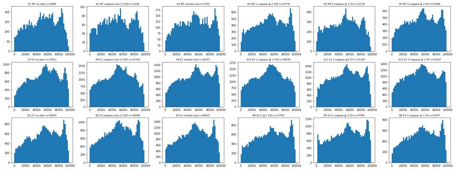
21
tool call · Read
{
"file_path": "/task/work/p_rl3.png"
}22
tool output
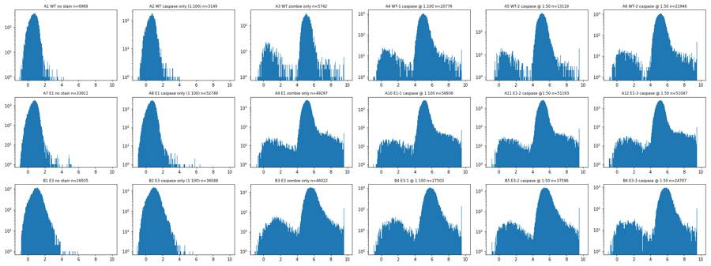
23
tool call · Read
{
"file_path": "/task/work/p_bl1.png"
}24
tool output
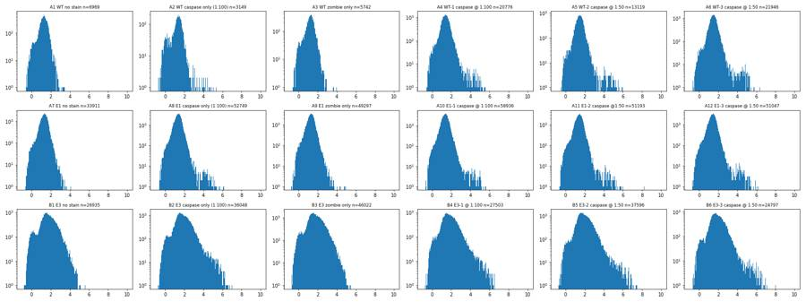
25
tool call · Read
{
"file_path": "/task/work/p_bl_rl.png"
}26
tool output
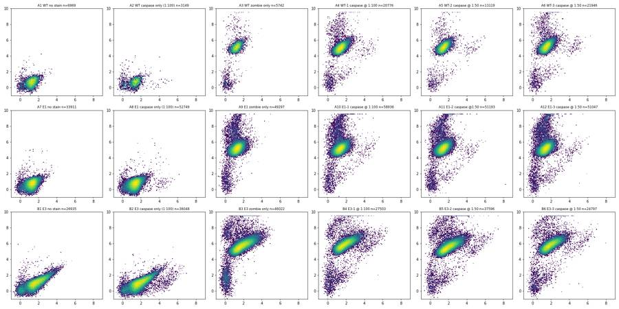
28
tool call · Bash
cat > plots2.py <<'EOF'
import pickle, numpy as np, pandas as pd
import matplotlib; matplotlib.use('Agg')
import matplotlib.pyplot as plt
D=pickle.load(open('D.pkl','rb'))
lay=pd.read_csv('/task/inputs/plate_layout.csv')
wells=list(lay.well)
LN=matplotlib.colors.LogNorm()
def grid(fn, name, figsize=(24,12)):
fig,axs=plt.subplots(3,6,figsize=figsize)
for ax,w in zip(axs.ravel(),wells):
fn(ax,D[w]); ax.set_title(f"{w} {lay.set_index('well').loc[w,'sample']} n={len(D[w])}",fontsize=9)
fig.tight_layout(); fig.savefig(name,dpi=70); plt.close(fig)
a=lambda x: np.arcsinh(x/150)
def cellmask(d): return (d['FSC-A']>200000)&(d['FSC-A']<1040000)&(d['SSC-A']>80000)&(d['SSC-A']<1040000)
def f1(ax,d):
ax.hist2d(d['FSC-A'],a(d['RL3-A']),bins=150,range=[[0,1.05e6],[-1,10]],norm=matplotlib.colors.LogNorm(),cmap='viridis')
grid(f1,'p_fsc_rl3.png')
def f2(ax,d):
d=d[cellmask(d)]
ax.hist2d(d['SSC-A'],a(d['BL1-A']),bins=150,range=[[0,1.05e6],[-1,9]],norm=matplotlib.colors.LogNorm(),cmap='viridis')
grid(f2,'p_ssc_bl1.png')
def f3(ax,d):
ax.hist2d(d['FSC-A'],a(d['BL1-A']),bins=150,range=[[0,1.05e6],[-1,9]],norm=matplotlib.colors.LogNorm(),cmap='viridis')
grid(f3,'p_fsc_bl1.png')
def f4(ax,d):
ax.hist2d(d['FSC-H'],d['FSC-W'],bins=150,range=[[0,1.05e6],[0,1024]],norm=matplotlib.colors.LogNorm(),cmap='viridis')
grid(f4,'p_fsch_w.png')
def f5(ax,d):
ax.hist2d(d['SSC-A'],d['SSC-H'],bins=150,range=[[0,1.05e6],[0,1.05e6]],norm=matplotlib.colors.LogNorm(),cmap='viridis')
grid(f5,'p_ssc_ah.png')
def f6(ax,d):
d=d[cellmask(d)]
ax.hist2d(a(d['BL1-A']),a(d['RL3-A']),bins=150,range=[[-1,9],[-1,10]],norm=matplotlib.colors.LogNorm(),cmap='viridis')
grid(f6,'p_bl_rl_cells.png')
for w in wells:
d=D[w]; print(w, d[['FSC-W','SSC-W','BL1-W','RL3-W']].describe().loc[['min','50%','max']].values.round(1).tolist(), (d['FSC-H']>=1048575).mean(), (d['SSC-H']>=1048575).mean())
EOF
python3 -I plots2.py29
tool call · Read
{
"file_path": "/task/work/p_fsc_rl3.png"
}30
tool call · Read
{
"file_path": "/task/work/p_ssc_bl1.png"
}31
tool call · Read
{
"file_path": "/task/work/p_bl_rl_cells.png"
}32
tool output
A1 [[43.0, 28.0, 0.0, 0.0], [117.0, 111.0, 0.0, 0.0], [232.0, 232.0, 25.0, 46.0]] 0.0 0.00014349261013057828 A2 [[41.0, 22.0, 0.0, 0.0], [115.0, 110.0, 0.0, 0.0], [243.0, 234.0, 71.0, 37.0]] 0.0 0.00031756113051762465 A3 [[40.0, 26.0, 0.0, 0.0], [117.0, 111.0, 0.0, 62.0], [250.0, 248.0, 38.0, 223.0]] 0.0 0.0 A4 [[40.0, 26.0, 0.0, 0.0], [119.0, 113.0, 0.0, 62.0], [354.0, 348.0, 99.0, 281.0]] 0.0 0.0001443973815941471 A5 [[42.0, 28.0, 0.0, 0.0], [119.0, 112.0, 0.0, 63.0], [375.0, 375.0, 101.0, 291.0]] 0.0 0.00015245064410397135 A6 [[38.0, 27.0, 0.0, 0.0], [120.0, 113.0, 0.0, 66.0], [308.0, 299.0, 128.0, 286.0]] 0.0 9.113278046113187e-05 A7 [[41.0, 24.0, 0.0, 0.0], [121.0, 113.0, 0.0, 0.0], [375.0, 362.0, 55.0, 80.0]] 0.0 0.00014744478192916754 A8 [[41.0, 20.0, 0.0, 0.0], [122.0, 114.0, 0.0, 0.0], [370.0, 367.0, 127.0, 102.0]] 0.0 0.00013270393751540314 A9 [[41.0, 23.0, 0.0, 0.0], [121.0, 114.0, 0.0, 67.0], [343.0, 351.0, 61.0, 345.0]] 0.0 0.00014199647037345072 A10 [[39.0, 24.0, 0.0, 0.0], [121.0, 114.0, 0.0, 66.0], [347.0, 347.0, 113.0, 342.0]] 0.0 0.00013574046423238766 A11 [[41.0, 19.0, 0.0, 0.0], [121.0, 114.0, 0.0, 67.0], [363.0, 375.0, 300.0, 375.0]] 0.0 0.00013673744457250015 A12 [[36.0, 10.0, 0.0, 0.0], [121.0, 113.0, 0.0, 67.0], [375.0, 369.0, 122.0, 367.0]] 0.0 0.00011753873880933257 B1 [[35.0, 23.0, 0.0, 0.0], [128.0, 120.0, 0.0, 0.0], [315.0, 311.0, 147.0, 101.0]] 0.0 0.0005940226471134212 B2 [[37.0, 16.0, 0.0, 0.0], [128.0, 120.0, 0.0, 0.0], [318.0, 337.0, 237.0, 211.0]] 0.0 0.0005825565912117177 B3 [[37.0, 17.0, 0.0, 0.0], [129.0, 121.0, 0.0, 81.0], [332.0, 332.0, 112.0, 311.0]] 0.0 0.00060840467602451 B4 [[36.0, 21.0, 0.0, 0.0], [128.0, 120.0, 0.0, 90.0], [375.0, 375.0, 184.0, 285.0]] 0.0 0.0005090353779587681 B5 [[39.0, 0.0, 0.0, 0.0], [129.0, 121.0, 0.0, 77.0], [375.0, 375.0, 280.0, 322.0]] 0.0 0.0009309501010745825 B6 [[36.0, 24.0, 0.0, 0.0], [128.0, 120.0, 0.0, 87.0], [370.0, 373.0, 233.0, 272.0]] 0.0 0.00048392950760172603
33
tool output
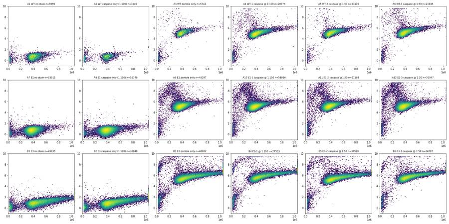
34
tool output
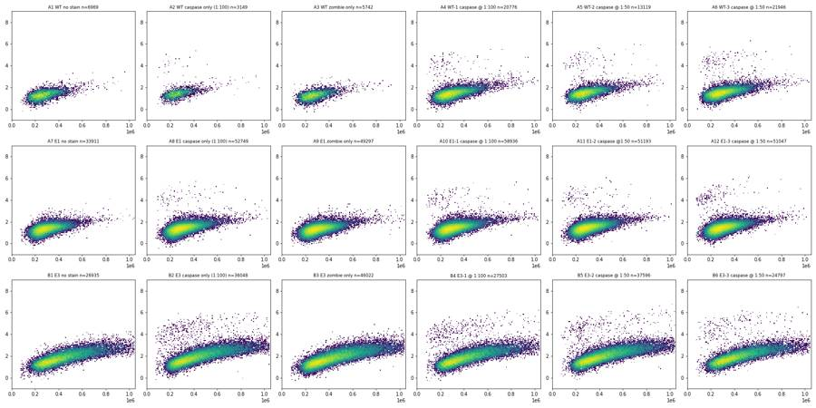
35
tool output
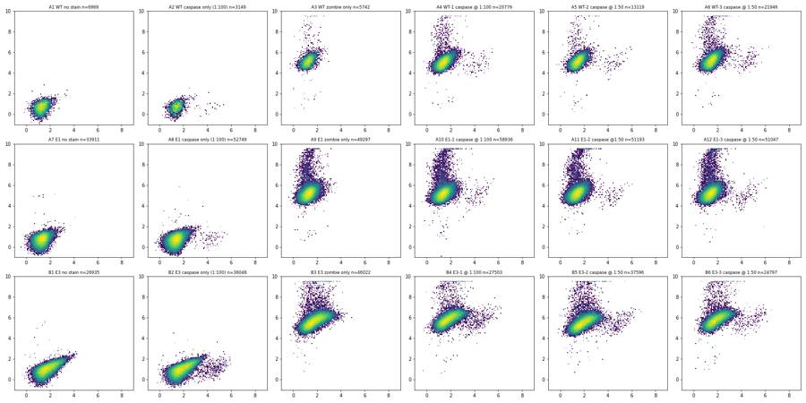
37
tool call · Read
{
"file_path": "/task/work/p_fsc_bl1.png"
}38
tool output
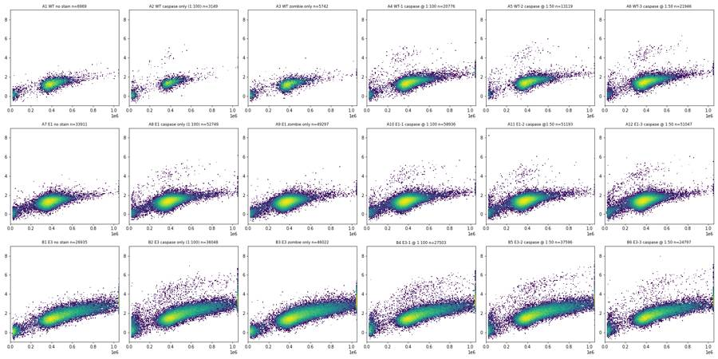
39
tool call · Read
{
"file_path": "/task/work/p_fsch_w.png"
}40
tool output
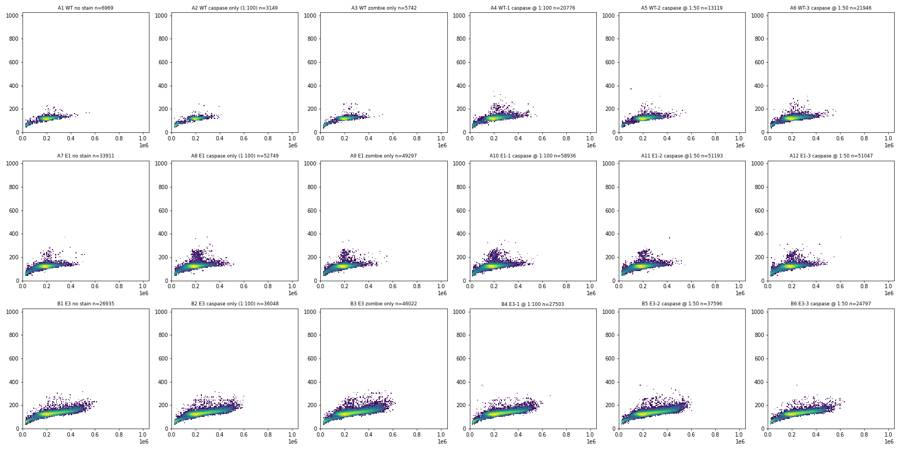
42
agent
Gates are now clear from the plots (scatter, singlets, Zombie vs size, caspase vs SSC); I'm pinning down exact boundaries numerically before building the FlowKit strategy.
43
tool call · Bash
cat > explore3.py <<'EOF'
import pickle, numpy as np, pandas as pd
import matplotlib; matplotlib.use('Agg')
import matplotlib.pyplot as plt
D=pickle.load(open('D.pkl','rb'))
lay=pd.read_csv('/task/inputs/plate_layout.csv')
wells=list(lay.well)
a=lambda x: np.arcsinh(x/150)
def cellmask(d): return (d['FSC-A']>200000)&(d['FSC-A']<1040000)&(d['SSC-A']>80000)&(d['SSC-A']<1040000)
for w in wells:
d=D[w]; c=d[cellmask(d)]
r=c['FSC-H']/c['FSC-A']
print(w, len(c), 'H/A pct 1,5,25,50,75,95,99:', np.percentile(r,[1,5,25,50,75,95,99]).round(3), 'FSC-W 50,95,99', np.percentile(c['FSC-W'],[50,95,99]))
# ratio vs FSC-A plot
fig,axs=plt.subplots(3,6,figsize=(24,12))
for ax,w in zip(axs.ravel(),wells):
d=D[w]; c=d[cellmask(d)]
ax.hist2d(c['FSC-A'],c['FSC-H']/c['FSC-A'],bins=120,range=[[0,1.05e6],[0,1]],norm=matplotlib.colors.LogNorm()); ax.set_title(w)
fig.tight_layout(); fig.savefig('p_ratio.png',dpi=70)
fig,axs=plt.subplots(3,6,figsize=(24,12))
for ax,w in zip(axs.ravel(),wells):
d=D[w]; c=d[cellmask(d)]
ax.hist2d(c['FSC-A'],c['FSC-W'],bins=120,range=[[0,1.05e6],[50,300]],norm=matplotlib.colors.LogNorm()); ax.set_title(w)
fig.tight_layout(); fig.savefig('p_fsca_w.png',dpi=70)
EOF
python3 -I explore3.py44
tool call · Read
{
"file_path": "/task/work/p_ratio.png"
}45
tool call · Read
{
"file_path": "/task/work/p_fsca_w.png"
}46
tool output
A1 6371 H/A pct 1,5,25,50,75,95,99: [0.36 0.419 0.474 0.506 0.535 0.577 0.611] FSC-W 50,95,99 [118. 134. 149.] A2 2538 H/A pct 1,5,25,50,75,95,99: [0.37 0.422 0.477 0.505 0.533 0.577 0.619] FSC-W 50,95,99 [118. 133. 146.] A3 5163 H/A pct 1,5,25,50,75,95,99: [0.364 0.422 0.473 0.504 0.533 0.573 0.604] FSC-W 50,95,99 [118. 134. 148.] A4 19702 H/A pct 1,5,25,50,75,95,99: [0.334 0.408 0.463 0.495 0.525 0.569 0.608] FSC-W 50,95,99 [120. 138. 157.] A5 12592 H/A pct 1,5,25,50,75,95,99: [0.34 0.413 0.469 0.501 0.531 0.574 0.607] FSC-W 50,95,99 [119. 136. 155.] A6 21031 H/A pct 1,5,25,50,75,95,99: [0.35 0.41 0.463 0.495 0.526 0.569 0.607] FSC-W 50,95,99 [120. 136. 153.] A7 32485 H/A pct 1,5,25,50,75,95,99: [0.358 0.411 0.461 0.492 0.523 0.569 0.608] FSC-W 50,95,99 [122. 135. 146.] A8 50991 H/A pct 1,5,25,50,75,95,99: [0.335 0.404 0.457 0.489 0.52 0.566 0.603] FSC-W 50,95,99 [122. 136. 157.] A9 47389 H/A pct 1,5,25,50,75,95,99: [0.349 0.404 0.454 0.487 0.519 0.567 0.606] FSC-W 50,95,99 [122. 135. 149.] A10 56795 H/A pct 1,5,25,50,75,95,99: [0.336 0.402 0.455 0.488 0.52 0.566 0.606] FSC-W 50,95,99 [122. 136. 157.] A11 49018 H/A pct 1,5,25,50,75,95,99: [0.347 0.404 0.456 0.488 0.52 0.568 0.607] FSC-W 50,95,99 [122. 136. 152.] A12 48423 H/A pct 1,5,25,50,75,95,99: [0.35 0.405 0.456 0.49 0.523 0.572 0.612] FSC-W 50,95,99 [121. 135. 150.] B1 23369 H/A pct 1,5,25,50,75,95,99: [0.343 0.395 0.448 0.48 0.509 0.553 0.597] FSC-W 50,95,99 [129. 151. 161.] B2 31698 H/A pct 1,5,25,50,75,95,99: [0.338 0.397 0.45 0.48 0.509 0.553 0.593] FSC-W 50,95,99 [128. 151. 161.] B3 40613 H/A pct 1,5,25,50,75,95,99: [0.332 0.394 0.449 0.48 0.509 0.551 0.591] FSC-W 50,95,99 [129. 152. 163.] B4 24207 H/A pct 1,5,25,50,75,95,99: [0.336 0.396 0.452 0.482 0.51 0.553 0.594] FSC-W 50,95,99 [128. 152. 162.] B5 33871 H/A pct 1,5,25,50,75,95,99: [0.334 0.397 0.45 0.48 0.509 0.552 0.592] FSC-W 50,95,99 [129. 151. 162.] B6 22190 H/A pct 1,5,25,50,75,95,99: [0.343 0.399 0.45 0.48 0.508 0.55 0.589] FSC-W 50,95,99 [128. 151. 160.]
47
tool output
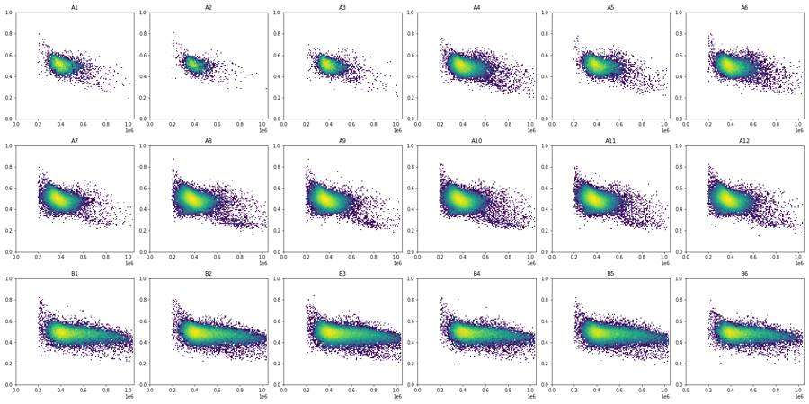
48
tool output
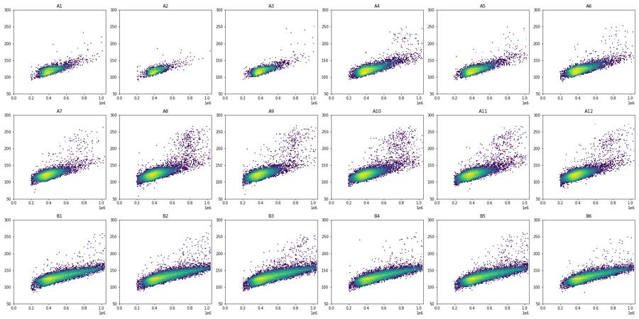
50
tool call · Bash
cat > explore4.py <<'EOF'
import pickle, numpy as np, pandas as pd
import matplotlib; matplotlib.use('Agg')
import matplotlib.pyplot as plt
from matplotlib.patches import Polygon
D=pickle.load(open('D.pkl','rb'))
lay=pd.read_csv('/task/inputs/plate_layout.csv')
wells=list(lay.well)
cellpoly=np.array([(200000,70000),(200000,450000),(500000,1040000),(1040000,1040000),(1040000,180000),(650000,70000)])
fig,axs=plt.subplots(3,6,figsize=(24,12))
for ax,w in zip(axs.ravel(),wells):
d=D[w]
ax.hist2d(d['FSC-A'],d['SSC-A'],bins=200,range=[[0,1.05e6],[0,1.05e6]],norm=matplotlib.colors.LogNorm())
ax.add_patch(Polygon(cellpoly,fill=False,ec='r')); ax.set_title(w)
fig.tight_layout(); fig.savefig('p_cells_gate.png',dpi=70)
fig,axs=plt.subplots(3,6,figsize=(24,9))
for ax,w in zip(axs.ravel(),wells):
d=D[w]
ax.hist(d['FSC-A'],bins=105,range=(0,1.05e6)); ax.set_yscale('log'); ax.axvline(200000,c='r'); ax.set_title(w)
fig.tight_layout(); fig.savefig('p_fsc_hist.png',dpi=70)
# color casp+ and dead events on scatter
a=lambda x: np.arcsinh(x/150)
fig,axs=plt.subplots(3,6,figsize=(24,12))
for ax,w in zip(axs.ravel(),wells):
d=D[w]
ax.scatter(d['FSC-A'],d['SSC-A'],s=1,c='lightgrey')
dead=d[d['RL3-A']>80000]; ax.scatter(dead['FSC-A'],dead['SSC-A'],s=2,c='r')
cp=d[(d['BL1-A']>4000)&(d['SSC-A']<350000)]; ax.scatter(cp['FSC-A'],cp['SSC-A'],s=3,c='g')
ax.add_patch(Polygon(cellpoly,fill=False,ec='b')); ax.set_title(w); ax.set_xlim(0,1.05e6); ax.set_ylim(0,1.05e6)
fig.tight_layout(); fig.savefig('p_cells_overlay.png',dpi=70)
EOF
python3 -I explore4.py51
tool call · Read
{
"file_path": "/task/work/p_cells_overlay.png"
}52
tool call · Read
{
"file_path": "/task/work/p_fsc_hist.png"
}53
tool output
(Bash completed with no output)
54
tool output
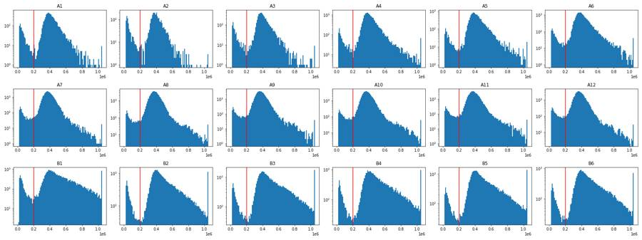
55
tool output
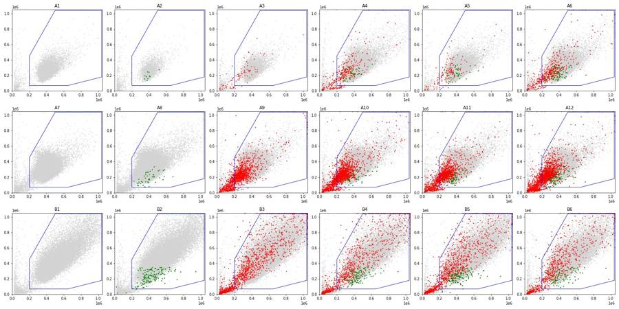
57
tool call · Bash
cat > explore5.py <<'EOF'
import pickle, numpy as np, pandas as pd
import matplotlib; matplotlib.use('Agg')
import matplotlib.pyplot as plt
from matplotlib.path import Path
D=pickle.load(open('D.pkl','rb'))
lay=pd.read_csv('/task/inputs/plate_layout.csv')
wells=list(lay.well)
a=lambda x: np.arcsinh(x/150)
cellpoly=np.array([(200000,50000),(200000,450000),(500000,1040000),(1040000,1040000),(1040000,180000),(650000,50000)])
sing=np.array([(150000,60),(150000,148),(500000,162),(1060000,182),(1060000,60)])
S={}
for w in wells:
d=D[w]
m=Path(cellpoly).contains_points(d[['FSC-A','SSC-A']].values)
c=d[m]
s=c[Path(sing).contains_points(c[['FSC-A','FSC-W']].values)]
S[w]=s
print(w,len(d),len(c),len(s),round(100*len(s)/len(c),1))
pickle.dump(S,open('S.pkl','wb'))
zw=['A3','A4','A5','A6','A9','A10','A11','A12','B3','B4','B5','B6']
bins=np.arange(200000,1050000,100000)
for w in zw:
s=S[w]; out=[]
for lo in bins:
x=a(s.loc[(s['FSC-A']>=lo)&(s['FSC-A']<lo+100000),'RL3-A'])
if len(x)<50: out.append(' - '); continue
med=np.median(x); sd=(med-np.percentile(x,15.87))
out.append(f"{med:.2f}/{sd:.2f}/{med+3.5*sd:.2f}")
print(w,' '.join(out))
fig,axs=plt.subplots(2,6,figsize=(24,8))
line=lambda f: 6.1+ (f-200000)/850000*1.2
for ax,w in zip(axs.ravel(),zw):
s=S[w]
ax.hist2d(s['FSC-A'],a(s['RL3-A']),bins=150,range=[[0.15e6,1.05e6],[3,10]],norm=matplotlib.colors.LogNorm())
f=np.array([200000,1050000]); ax.plot(f,line(f),'r'); ax.set_title(w)
fig.tight_layout(); fig.savefig('p_live_gate.png',dpi=75)
fig,axs=plt.subplots(2,6,figsize=(24,8))
for ax,w in zip(axs.ravel(),zw):
s=S[w]
ax.hist(a(s['RL3-A'])-line(s['FSC-A']),bins=150,range=(-3,4)); ax.set_yscale('log'); ax.axvline(0,c='r'); ax.set_title(w)
fig.tight_layout(); fig.savefig('p_live_resid.png',dpi=75)
EOF
python3 -I explore5.py58
tool call · Read
{
"file_path": "/task/work/p_live_gate.png"
}59
tool call · Read
{
"file_path": "/task/work/p_live_resid.png"
}60
tool output
A1 6969 6373 6361 99.8 A2 3149 2541 2537 99.8 A3 5742 5164 5150 99.7 A4 20776 19711 19635 99.6 A5 13119 12587 12549 99.7 A6 21946 21035 20977 99.7 A7 33911 32483 32376 99.7 A8 52749 50990 50636 99.3 A9 49297 47392 47122 99.4 A10 58936 56788 56419 99.4 A11 51193 49020 48757 99.5 A12 51047 48423 48171 99.5 B1 26935 23359 23284 99.7 B2 36048 31706 31569 99.6 B3 46022 40584 40384 99.5 B4 27503 24198 24117 99.7 B5 37596 33858 33717 99.6 B6 24797 22174 22112 99.7 A3 4.97/0.60/7.06 4.93/0.32/6.07 5.25/0.32/6.36 5.56/0.30/6.61 5.73/0.32/6.84 - - - - A4 4.80/0.47/6.44 4.79/0.33/5.93 5.12/0.32/6.24 5.41/0.29/6.42 5.62/0.30/6.67 5.80/0.27/6.76 6.02/0.28/6.99 6.14/0.19/6.79 - A5 4.76/0.44/6.30 4.88/0.32/6.02 5.23/0.31/6.32 5.52/0.27/6.45 5.68/0.26/6.58 5.93/0.27/6.88 6.11/0.28/7.07 - - A6 4.93/0.42/6.40 4.99/0.35/6.21 5.34/0.33/6.49 5.62/0.27/6.56 5.82/0.25/6.71 6.04/0.27/6.99 6.25/0.18/6.89 - - A9 5.06/0.45/6.62 5.06/0.36/6.32 5.33/0.33/6.47 5.60/0.27/6.54 5.81/0.28/6.77 6.02/0.28/7.02 6.22/0.18/6.86 - - A10 5.02/0.42/6.50 5.02/0.34/6.22 5.28/0.30/6.32 5.55/0.23/6.34 5.79/0.23/6.58 5.99/0.21/6.71 6.18/0.21/6.89 6.25/0.23/7.05 - A11 5.06/0.44/6.61 5.06/0.36/6.31 5.33/0.31/6.41 5.60/0.24/6.44 5.80/0.24/6.64 6.05/0.27/6.98 6.24/0.22/7.02 - - A12 5.10/0.48/6.77 5.06/0.36/6.33 5.33/0.32/6.45 5.61/0.26/6.54 5.85/0.25/6.74 6.00/0.20/6.71 6.21/0.20/6.91 - - B3 5.25/0.55/7.16 5.23/0.33/6.38 5.48/0.30/6.52 5.77/0.25/6.65 5.96/0.23/6.75 6.09/0.20/6.80 6.23/0.19/6.88 6.33/0.18/6.96 6.40/0.15/6.92 B4 5.47/0.64/7.71 5.42/0.34/6.60 5.67/0.31/6.75 5.96/0.25/6.84 6.16/0.23/6.95 6.31/0.20/7.02 6.44/0.18/7.08 6.55/0.18/7.19 6.61/0.20/7.32 B5 5.16/0.49/6.87 5.10/0.32/6.23 5.34/0.29/6.36 5.61/0.25/6.50 5.81/0.22/6.59 5.95/0.19/6.63 6.08/0.19/6.75 6.19/0.16/6.76 6.26/0.14/6.77 B6 5.33/0.49/7.05 5.40/0.35/6.63 5.65/0.33/6.80 5.94/0.26/6.86 6.12/0.22/6.89 6.27/0.21/7.01 6.40/0.19/7.09 6.51/0.17/7.09 6.61/0.18/7.25
61
tool output
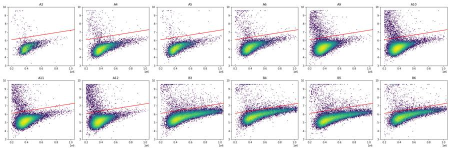
62
tool output
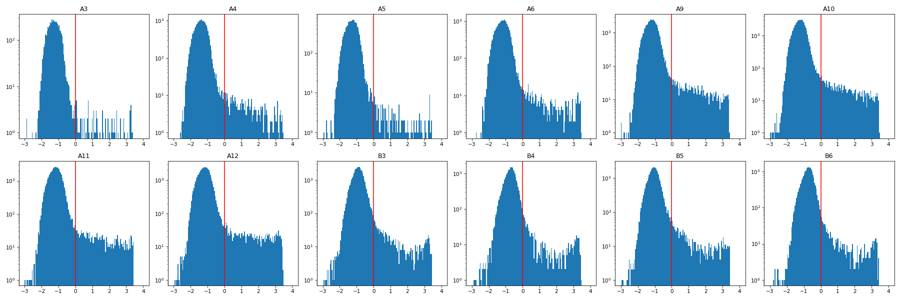
64
agent
Singlet and live boundaries are settled; now setting the caspase-3+ gate against the unstained and Zombie-only controls.
65
tool call · Bash
cat > explore6.py <<'EOF'
import pickle, numpy as np, pandas as pd
import matplotlib; matplotlib.use('Agg')
import matplotlib.pyplot as plt
S=pickle.load(open('S.pkl','rb'))
lay=pd.read_csv('/task/inputs/plate_layout.csv').set_index('well')
wells=list(lay.index)
a=lambda x: np.arcsinh(x/150)
line=lambda f: 6.25+ (f-200000)/850000*1.2
L={}
for w in wells:
s=S[w]; L[w]=s[a(s['RL3-A'])<line(s['FSC-A'])]
pickle.dump(L,open('L.pkl','wb'))
bins=np.array([50,150,250,350,450,600,800,1040])*1000
for w in ['A1','A3','A7','A9','B1','B3']:
s=L[w]; out=[]
for lo,hi in zip(bins[:-1],bins[1:]):
x=a(s.loc[(s['SSC-A']>=lo)&(s['SSC-A']<hi),'BL1-A'])
out.append(f"{len(x)}:{np.percentile(x,99.5):.2f}/{x.max():.2f}" if len(x)>20 else f"{len(x)}:-")
print(w,' '.join(out))
# candidate boundary (arcsinh units) vs SSC
bx=np.array([50000,200000,400000,600000,1040000]); by=np.array([3.3,3.5,4.0,4.5,5.1])
bound=lambda s: np.interp(s,bx,by)
fig,axs=plt.subplots(3,6,figsize=(24,12))
for ax,w in zip(axs.ravel(),wells):
s=L[w]
ax.hist2d(s['SSC-A'],a(s['BL1-A']),bins=150,range=[[0,1.05e6],[-1,9]],norm=matplotlib.colors.LogNorm())
ax.plot(bx,by,'r')
pos=(a(s['BL1-A'])>bound(s['SSC-A']))
ax.set_title(f"{w} {lay.loc[w,'sample']} live={len(s)} pos={pos.sum()} ({100*pos.mean():.2f}%)",fontsize=9)
print(w,lay.loc[w,'sample'],len(S[w]),len(s),round(100*len(s)/len(S[w]),2),pos.sum(),round(100*pos.mean(),3))
fig.tight_layout(); fig.savefig('p_casp_gate.png',dpi=70)
EOF
python3 -I explore6.py66
tool call · Read
{
"file_path": "/task/work/p_casp_gate.png"
}67
tool output
A1 142:1.65/1.71 2580:1.90/2.32 2438:2.19/2.56 889:2.47/2.67 262:3.12/3.31 42:3.24/3.38 8:- A3 123:1.99/2.30 1958:1.87/2.20 2010:2.20/2.92 750:2.33/2.94 197:2.68/2.77 35:2.51/2.52 6:- A7 210:1.61/1.77 9631:1.94/2.69 15038:2.25/3.24 5890:2.46/3.05 1429:2.72/3.16 158:3.32/3.73 20:- A9 220:1.99/2.07 11817:1.96/2.68 21351:2.18/3.26 9780:2.45/3.47 2489:2.78/3.66 226:3.13/3.14 38:3.48/3.50 B1 118:1.68/1.80 2484:2.01/2.95 6454:2.40/3.16 5292:2.79/3.14 4904:3.19/3.80 2952:3.64/4.18 1080:3.99/4.26 B3 120:1.86/1.99 4570:2.00/2.67 10912:2.41/3.11 8596:2.79/4.24 8481:3.22/3.84 4967:3.71/4.92 1785:4.09/4.58 A1 WT no stain 6361 6361 100.0 0 0.0 A2 WT caspase only (1:100) 2537 2537 100.0 17 0.67 A3 WT zombie only 5150 5079 98.62 0 0.0 A4 WT-1 caspase @ 1:100 19635 19334 98.47 69 0.357 A5 WT-2 caspase @ 1:50 12549 12416 98.94 63 0.507 A6 WT-3 caspase @ 1:50 20977 20542 97.93 117 0.57 A7 E1 no stain 32376 32376 100.0 0 0.0 A8 E1 caspase only (1:100) 50636 50636 100.0 78 0.154 A9 E1 zombie only 47122 45921 97.45 0 0.0 A10 E1-1 caspase @ 1:100 56419 54985 97.46 83 0.151 A11 E1-2 caspase @1:50 48757 47572 97.57 84 0.177 A12 E1-3 caspase @ 1:50 48171 46694 96.93 135 0.289 B1 E3 no stain 23284 23284 100.0 0 0.0 B2 E3 caspase only (1:100) 31569 31569 100.0 326 1.033 B3 E3 zombie only 40384 39431 97.64 2 0.005 B4 E3-1 @ 1:100 24117 23412 97.08 255 1.089 B5 E3-2 caspase @ 1:50 33717 32833 97.38 239 0.728 B6 E3-3 caspase @ 1:50 22112 21423 96.88 168 0.784
68
tool output
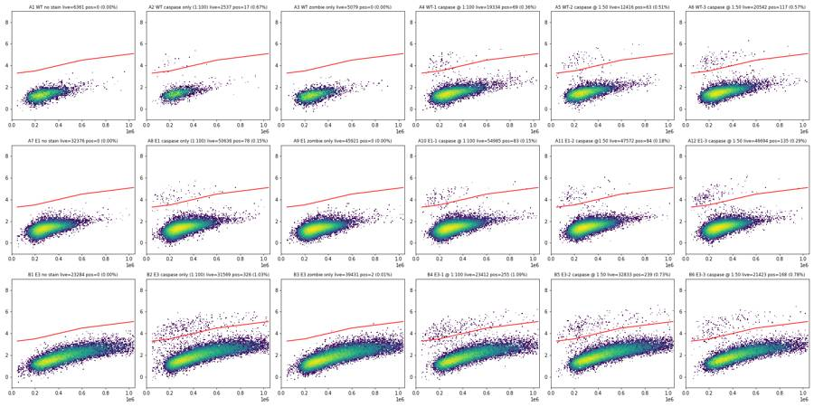
70
tool call · Bash
python3 -I -c "
import flowkit as fk, inspect
print(fk.__version__)
print(inspect.signature(fk.transforms.LogicleTransform.__init__))
print(inspect.signature(fk.Dimension.__init__))
print(inspect.signature(fk.gates.PolygonGate.__init__))
print(inspect.signature(fk.gates.RectangleGate.__init__))
print(inspect.signature(fk.GatingStrategy.add_gate))
print(inspect.signature(fk.GatingStrategy.add_transform))
print(inspect.signature(fk.GatingStrategy.gate_sample))
print(inspect.signature(fk.Sample.__init__))
print(inspect.signature(fk.export_gatingml))
print([m for m in dir(fk.GatingResults) if not m.startswith('_')])
"71
tool output (error)
Exit code 1 Traceback (most recent call last): File "<string>", line 13, in <module> AttributeError: module 'flowkit' has no attribute 'GatingResults' 1.2.3 (self, param_t, param_w, param_m, param_a) (self, dimension_id, compensation_ref='uncompensated', transformation_ref=None, range_min=None, range_max=None) (self, gate_name, dimensions, vertices, use_complement=False) (self, gate_name, dimensions, use_complement=False) (self, gate, gate_path, sample_id=None) (self, transform_id, transform) (self, sample, cache_events=False, verbose=False) (self, fcs_path_or_data, sample_id=None, filename_as_id=False, channel_labels=None, compensation=None, null_channel_list=None, ignore_offset_error=False, ignore_offset_discrepancy=False, use_header_offsets=False, cache_original_events=False, subsample=10000) (gating_strategy, file_handle, sample_id=None)
72
agent
Building the final FlowKit gating strategy now, then exporting `gates.xml` and counts and cross-checking them against my exploratory numbers.
73
tool call · Bash
cat > build_gates.py <<'EOF'
import flowkit as fk, numpy as np, pandas as pd, os
RAW='/task/inputs/raw/'; OUT='/task/outputs/'
lay=pd.read_csv('/task/inputs/plate_layout.csv')
T,W,M,A=1048576,0.5,4.5,0
lgl=fk.transforms.LogicleTransform(param_t=T,param_w=W,param_m=M,param_a=A)
L=lambda raw: float(lgl.apply(np.array([float(raw)]))[0])
asinh2raw=lambda v: 150*np.sinh(v) # boundaries were chosen on arcsinh(x/150) display axes
gs=fk.GatingStrategy()
gs.add_transform('logicle',lgl)
U='uncompensated'
d=lambda ch,tr=None: fk.Dimension(ch,compensation_ref=U,transformation_ref=tr)
# 1 cells: FSC-A vs SSC-A (linear) - excludes debris (FSC-A<200k) and events at the scatter ceiling
cells_v=[(200000,50000),(200000,450000),(500000,1040000),(1040000,1040000),(1040000,180000),(650000,50000)]
gs.add_gate(fk.gates.PolygonGate('cells',[d('FSC-A'),d('SSC-A')],cells_v),gate_path=('root',))
# 2 singlets: FSC-A vs FSC-W (linear)
sing_v=[(150000,60),(150000,148),(500000,162),(1060000,182),(1060000,60)]
gs.add_gate(fk.gates.PolygonGate('singlets',[d('FSC-A'),d('FSC-W')],sing_v),gate_path=('root','cells'))
# 3 live: Zombie NIR (RL3-A, logicle) below a size-dependent ceiling (FSC-A linear)
live_line=lambda f: 6.25+(f-200000)/850000*1.2
fx=[150000,625000,1100000]
live_v=[(fx[0],-0.5)]+[(f,L(asinh2raw(live_line(f)))) for f in fx]+[(fx[-1],-0.5)]
gs.add_gate(fk.gates.PolygonGate('live',[d('FSC-A'),d('RL3-A','logicle')],live_v),gate_path=('root','cells','singlets'))
# 4 casp3_pos: cleaved caspase-3 AF488 (BL1-A, logicle) above an SSC-dependent autofluorescence ceiling
bx=[40000,200000,400000,600000,1060000]; by=[3.3,3.5,4.0,4.5,5.1]
casp_v=[(x,L(asinh2raw(y))) for x,y in zip(bx,by)]+[(bx[-1],1.05),(bx[0],1.05)]
gs.add_gate(fk.gates.PolygonGate('casp3_pos',[d('SSC-A'),d('BL1-A','logicle')],casp_v),gate_path=('root','cells','singlets','live'))
# 5 sensitivity population: same caspase gate on all singlets (ignores Zombie)
gs.add_gate(fk.gates.PolygonGate('casp3_pos_all_singlets',[d('SSC-A'),d('BL1-A','logicle')],casp_v),gate_path=('root','cells','singlets'))
with open(OUT+'gates.xml','wb') as fh: fk.export_gatingml(gs,fh)
gs2=fk.parse_gating_xml(OUT+'gates.xml')
print(gs2.get_gate_ids())
print('live vertices (raw RL3):',[(f,round(asinh2raw(live_line(f)))) for f in fx])
print('casp vertices (raw BL1):',[(x,round(asinh2raw(y))) for x,y in zip(bx,by)])
print('logicle verts live',live_v); print('logicle verts casp',casp_v)
pops=[('cells','cells','all_events',('root',)),('singlets','singlets','cells',('root','cells')),
('live','live','singlets',('root','cells','singlets')),
('casp3_pos','marker_positive','live',('root','cells','singlets','live')),
('casp3_pos_all_singlets','other','singlets',('root','cells','singlets'))]
rows=[]
for _,r in lay.iterrows():
s=fk.Sample(RAW+r.file)
res=gs2.gate_sample(s) # counts come from the RELOADED saved gates
res1=gs.gate_sample(s)
n=s.event_count
cnt={'all_events':n}
rows.append(dict(file=r.file,well=r.well,population='all_events',role='other',parent='none',count=n,pct_of_parent=''))
for name,role,parent,path in pops:
c=int(res.get_gate_count(name,gate_path=path)); assert c==int(res1.get_gate_count(name,gate_path=path))
cnt[name]=c; pc=cnt[parent]
rows.append(dict(file=r.file,well=r.well,population=name,role=role,parent=parent,count=c,pct_of_parent=(round(100*c/pc,4) if pc>0 else '')))
print(r.well,cnt)
pd.DataFrame(rows)[['file','well','population','role','parent','count','pct_of_parent']].to_csv(OUT+'counts.csv',index=False)
EOF
python3 -I build_gates.py 2>&1 | grep -v Warning74
tool output
[('cells', ('root',)), ('singlets', ('root', 'cells')), ('live', ('root', 'cells', 'singlets')), ('casp3_pos', ('root', 'cells', 'singlets', 'live')), ('casp3_pos_all_singlets', ('root', 'cells', 'singlets'))]
live vertices (raw RL3): [(150000, 36203), (625000, 70791), (1100000, 138424)]
casp vertices (raw BL1): [(40000, 2031), (200000, 2481), (400000, 4093), (600000, 6750), (1060000, 12301)]
logicle verts live [(150000, -0.5), (150000, 0.6741088562739251), (625000, 0.7393388679863564), (1100000, 0.8043270777207698), (1100000, -0.5)]
logicle verts casp [(40000, 0.38266153813332326), (200000, 0.40415256299351493), (400000, 0.456731696025375), (600000, 0.5079134949275578), (1060000, 0.5680236991252703), (1060000, 1.05), (40000, 1.05)]
A1 {'all_events': 6969, 'cells': 6373, 'singlets': 6361, 'live': 6361, 'casp3_pos': 0, 'casp3_pos_all_singlets': 0}
A2 {'all_events': 3149, 'cells': 2541, 'singlets': 2537, 'live': 2537, 'casp3_pos': 17, 'casp3_pos_all_singlets': 17}
A3 {'all_events': 5742, 'cells': 5164, 'singlets': 5150, 'live': 5079, 'casp3_pos': 0, 'casp3_pos_all_singlets': 0}
A4 {'all_events': 20776, 'cells': 19711, 'singlets': 19635, 'live': 19334, 'casp3_pos': 69, 'casp3_pos_all_singlets': 69}
A5 {'all_events': 13119, 'cells': 12587, 'singlets': 12549, 'live': 12416, 'casp3_pos': 63, 'casp3_pos_all_singlets': 63}
A6 {'all_events': 21946, 'cells': 21035, 'singlets': 20977, 'live': 20542, 'casp3_pos': 117, 'casp3_pos_all_singlets': 117}
A7 {'all_events': 33911, 'cells': 32483, 'singlets': 32376, 'live': 32376, 'casp3_pos': 0, 'casp3_pos_all_singlets': 0}
A8 {'all_events': 52749, 'cells': 50990, 'singlets': 50636, 'live': 50636, 'casp3_pos': 78, 'casp3_pos_all_singlets': 78}
A9 {'all_events': 49297, 'cells': 47392, 'singlets': 47122, 'live': 45921, 'casp3_pos': 0, 'casp3_pos_all_singlets': 0}
A10 {'all_events': 58936, 'cells': 56788, 'singlets': 56419, 'live': 54985, 'casp3_pos': 83, 'casp3_pos_all_singlets': 84}
A11 {'all_events': 51193, 'cells': 49020, 'singlets': 48757, 'live': 47572, 'casp3_pos': 84, 'casp3_pos_all_singlets': 84}
A12 {'all_events': 51047, 'cells': 48423, 'singlets': 48171, 'live': 46694, 'casp3_pos': 135, 'casp3_pos_all_singlets': 137}
B1 {'all_events': 26935, 'cells': 23359, 'singlets': 23284, 'live': 23284, 'casp3_pos': 0, 'casp3_pos_all_singlets': 0}
B2 {'all_events': 36048, 'cells': 31706, 'singlets': 31569, 'live': 31569, 'casp3_pos': 325, 'casp3_pos_all_singlets': 325}
B3 {'all_events': 46022, 'cells': 40584, 'singlets': 40384, 'live': 39430, 'casp3_pos': 2, 'casp3_pos_all_singlets': 2}
B4 {'all_events': 27503, 'cells': 24198, 'singlets': 24117, 'live': 23412, 'casp3_pos': 255, 'casp3_pos_all_singlets': 267}
B5 {'all_events': 37596, 'cells': 33858, 'singlets': 33717, 'live': 32833, 'casp3_pos': 239, 'casp3_pos_all_singlets': 243}
B6 {'all_events': 24797, 'cells': 22174, 'singlets': 22112, 'live': 21423, 'casp3_pos': 168, 'casp3_pos_all_singlets': 175}76
tool call · Bash
cat > qc.py <<'EOF'
import flowkit as fk, numpy as np, pandas as pd, warnings
warnings.filterwarnings('ignore')
from scipy import stats
RAW='/task/inputs/raw/'
lay=pd.read_csv('/task/inputs/plate_layout.csv')
gs=fk.parse_gating_xml('/task/outputs/gates.xml')
rows=[]
import pickle
E={}
for _,r in lay.iterrows():
s=fk.Sample(RAW+r.file); res=gs.gate_sample(s)
df=s.as_dataframe(source='raw'); df.columns=[c[0] for c in df.columns]
t=df['Time'].values
m_live=res.get_gate_membership('live'); m_pos=res.get_gate_membership('casp3_pos'); m_sing=res.get_gate_membership('singlets'); m_cells=res.get_gate_membership('cells')
E[r.well]=dict(df=df,live=m_live,pos=m_pos,sing=m_sing,cells=m_cells)
tt=np.sort(t); dur=tt.max()-tt.min()
h,_=np.histogram(t,bins=np.arange(0,tt.max()+1e-9,tt.max()/20))
# fluorescence drift: median RL3/BL1 of live in first vs last third
lt=df[m_live]; q1=lt[lt.Time<tt.max()/3]; q3=lt[lt.Time>2*tt.max()/3]
neg=df[m_live&~m_pos]; pos=df[m_pos]
rows.append(dict(well=r.well,sample=r['sample'],n=len(df),tmax=round(tt.max(),2),maxgap=round(np.diff(tt).max(),3),
rate_min=h.min(),rate_med=int(np.median(h)),rate_max=h.max(),cv_rate=round(h.std()/h.mean(),2),
fsc_sat=int((df['FSC-A']>=1048575).sum()),ssc_sat=int((df['SSC-A']>=1048575).sum()),rl3_sat=int((df['RL3-A']>=1048575).sum()),bl1_max=df['BL1-A'].max(),
pct_scatter_sat=round(100*((df['FSC-A']>=1048575)|(df['SSC-A']>=1048575)).mean(),2),
debris_pct=round(100*(df['FSC-A']<200000).mean(),1),
RL3_live_med=round(lt['RL3-A'].median()),RL3_first=round(q1['RL3-A'].median()),RL3_last=round(q3['RL3-A'].median()),
BL1_neg_med=round(neg['BL1-A'].median()),BL1_neg_rsd=round((np.percentile(neg['BL1-A'],84.13)-np.percentile(neg['BL1-A'],15.87))/2),BL1_pos_med=(round(pos['BL1-A'].median()) if len(pos) else None),n_pos=len(pos),
rl3hi_in_sing=int(((df['RL3-A']>3000)&m_sing).sum()), bl1_gt2500_sing=int(((df['BL1-A']>2500)&m_sing).sum())))
q=pd.DataFrame(rows)
pd.set_option('display.width',300); pd.set_option('display.max_columns',40)
print(q.to_string())
q.to_csv('qc.csv',index=False)
pickle.dump(E,open('E.pkl','wb'))
EOF
python3 -I qc.py77
tool output
well sample n tmax maxgap rate_min rate_med rate_max cv_rate fsc_sat ssc_sat rl3_sat bl1_max pct_scatter_sat debris_pct RL3_live_med RL3_first RL3_last BL1_neg_med BL1_neg_rsd BL1_pos_med n_pos rl3hi_in_sing bl1_gt2500_sing 0 A1 WT no stain 6969 97.95 0.258 128 350 501 0.26 9 12 0 2326.0 0.29 8.3 116 115 120 254 104 NaN 0 0 0 1 A2 WT caspase only (1:100) 3149 97.76 0.392 85 165 208 0.20 3 12 0 16263.0 0.38 19.0 119 117 122 290 107 5312.0 17 0 18 2 A3 WT zombie only 5742 97.04 0.268 127 289 394 0.21 9 14 6 4054.0 0.33 9.8 12541 12323 12656 245 98 NaN 0 5134 0 3 A4 WT-1 caspase @ 1:100 20776 96.95 0.060 608 1061 1480 0.22 67 46 19 20046.0 0.46 4.6 11252 11159 11359 291 116 5826.0 69 19621 77 4 A5 WT-2 caspase @ 1:50 13119 96.82 0.093 395 642 945 0.21 18 18 17 29179.0 0.24 3.7 12545 12573 12562 314 122 7133.0 63 12532 71 5 A6 WT-3 caspase @ 1:50 21946 97.90 0.058 536 1090 1541 0.21 38 28 41 41920.0 0.26 3.9 13600 13399 13686 322 121 7055.0 117 20964 127 6 A7 E1 no stain 33911 97.90 0.070 759 1633 2350 0.24 17 33 0 4492.0 0.12 4.0 121 118 125 264 100 NaN 0 6 2 7 A8 E1 caspase only (1:100) 52749 97.96 0.041 1717 2537 3773 0.22 35 52 0 34919.0 0.14 3.1 118 116 120 278 105 5880.0 78 2 83 8 A9 E1 zombie only 49297 97.99 0.029 1279 2499 3335 0.20 36 43 35 10482.0 0.13 3.7 13103 13031 13191 257 97 NaN 0 47099 2 9 A10 E1-1 caspase @ 1:100 58936 97.92 0.030 1883 2799 4117 0.22 59 56 62 20786.0 0.16 3.4 12712 12623 12775 280 105 6165.0 83 56382 95 10 A11 E1-2 caspase @1:50 51193 97.16 0.039 1255 2559 3389 0.20 38 50 74 282555.0 0.15 4.1 13422 13356 13550 297 111 6206.0 84 48734 92 11 A12 E1-3 caspase @ 1:50 51047 98.00 0.044 1391 2604 3349 0.18 30 47 83 36379.0 0.13 5.0 13143 12967 13252 294 112 5626.0 135 48143 142 12 B1 E3 no stain 26935 97.08 0.060 612 1384 2003 0.25 786 973 0 20396.0 4.42 8.5 182 174 187 403 288 NaN 0 6 78 13 B2 E3 caspase only (1:100) 36048 98.01 0.112 1016 1829 2549 0.25 1054 1198 0 80914.0 4.08 7.7 177 169 183 449 321 7682.0 325 2 525 14 B3 E3 zombie only 46022 98.01 0.049 1274 2293 3310 0.25 1692 1830 148 16526.0 4.97 6.5 20902 20244 21547 399 294 7722.0 2 40360 155 15 B4 E3-1 @ 1:100 27503 97.12 0.079 637 1386 2018 0.23 940 1004 130 50990.0 4.66 7.1 25482 24415 25831 430 306 6827.0 255 24098 407 16 B5 E3-2 caspase @ 1:50 37596 97.99 0.810 1141 1870 2669 0.22 1355 1450 138 126657.0 4.90 4.8 17948 17481 18234 474 328 9382.0 239 33696 443 17 B6 E3-3 caspase @ 1:50 24797 97.16 0.055 570 1287 1801 0.24 676 818 94 223049.0 3.98 6.4 24128 23466 24668 469 318 9312.0 168 22092 296
79
tool call · Bash
python3 -I -c "
import pickle,numpy as np
E=pickle.load(open('E.pkl','rb'))
for w in ['B5','A2','A1','B2']:
t=np.sort(E[w]['df']['Time'].values); g=np.diff(t); i=g.argmax()
print(w,'tmin',t.min(),'gap at',t[i],'->',t[i+1],'top gaps',np.sort(g)[-4:].round(3))
h,_=np.histogram(t,bins=np.arange(0,100,5)); print(h)
"
80
tool output
B5 tmin 0.457 gap at 1.089 -> 1.899 top gaps [0.07 0.595 0.737 0.81 ] [1174 1244 1380 1534 1520 1730 1751 1902 1916 2030 2414 2655 2352 2045 2220 2028 1825 2075 2811] A2 tmin 0.062 gap at 12.235 -> 12.627 top gaps [0.226 0.236 0.261 0.392] [121 127 116 162 157 174 169 174 194 174 210 196 171 130 163 183 200 169 119] A1 tmin 0.026000000000000002 gap at 96.489 -> 96.747 top gaps [0.232 0.233 0.238 0.258] [192 252 296 326 318 357 344 322 401 446 463 425 435 474 355 364 451 454 238] B2 tmin 0.026000000000000002 gap at 90.81 -> 90.922 top gaps [0.041 0.046 0.054 0.112] [1037 1165 1274 1446 1597 1716 1787 1908 2119 2417 2534 2371 2151 2222 2064 1738 1884 2580 1487]
82
agent
Counts and QC are done; loading the charting guidance, then writing the flags, summary, figure, report and answer.
83
tool call · Skill
{
"skill": "dataviz"
}84
tool output
Launching skill: dataviz
86
tool call · Bash
cd /tmp/claude-0/bundled-skills/2.1.322/8cc9ea6bd49ed24b170ee0a1fe32c837/dataviz && grep -n -i -E "categorical|#[0-9a-fA-F]{6}" references/palette.md | head -6087
tool output
18: --surface-1: #fcfcfb; /* chart surface */ 19: --text-primary: #0b0b0b; 20: --text-secondary: #52514e; 21: --series-1: #2a78d6; /* categorical slot 1 */ 27: --surface-1: #1a1a19; 28: --text-primary: #f0efec; 29: --text-secondary: #c3c2b7; 30: --series-1: #3987e5; 35: --surface-1: #1a1a19; 36: --text-primary: #f0efec; 37: --text-secondary: #c3c2b7; 38: --series-1: #3987e5; 47:## Categorical palette 54:| 1 | blue | `#2a78d6` | `#3987e5` | 55:| 2 | orange | `#eb6834` | `#d95926` | 56:| 3 | aqua | `#1baf7a` | `#199e70` | 57:| 4 | yellow | `#eda100` | `#c98500` | 58:| 5 | magenta | `#e87ba4` | `#d55181` | 59:| 6 | green | `#008300` | `#008300` | 60:| 7 | violet | `#6250d6` | `#9085e9` | 61:| 8 | red | `#e34948` | `#e66767` | 86:pure re-order. Light slot 7 has since been lightened, `#4a3aa7` -> `#6250d6` 103:once, the second takes the next categorical slot's hue (orange), each as its own 108:| 100 | `#cde2fb` | 250 | `#86b6ef` | 400 | `#3987e5` | 550 | `#1c5cab` | 109:| 150 | `#b7d3f6` | 300 | `#6da7ec` | 450 | `#2a78d6` | 600 | `#184f95` | 110:| 200 | `#9ec5f4` | 350 | `#5598e7` | 500 | `#256abf` | 650 | `#104281` | 111:| | | | | | | 700 | `#0d366b` | 117:must still clear 2:1: on light, start no lighter than **step 250** (`#86b6ef`, 118:2.06:1); on dark, go no darker than **step 600** (`#184f95`, 2.15:1). 123:(light `#f0efec`, dark `#383835`). Equal step count per arm. (blue<->aqua was 130:| good | `#0ca30c` | 3.27 | 5.19 | 131:| warning | `#fab219` | 1.79 | 9.49 | 132:| serious | `#ec835a` | 2.57 | 6.60 | 133:| critical | `#d03b3b` | 4.68 | 3.62 | 135:Dark: same four steps - all clear 3:1 on the dark surface (`#1a1a19`) and remain 136:distinct from the dark categorical slots. On the light surface, warning and 139:from the categorical slots so a status color never impersonates a series - 142:(unsimulated Delta E >= 15), around nine categorical-vs-status pairs per mode sit 145:green `#006300` sits 10.1 from the series green; green vs status-good (9.7) 160:- Light chart surface: `#fcfcfb` 161:- Dark chart surface: `#1a1a19` 173:| Chart surface | `#fcfcfb` | `#1a1a19` | 174:| Page plane | `#f9f9f7` | `#0d0d0d` | 175:| Primary ink | `#0b0b0b` | `#f0efec` | 176:| Secondary ink | `#52514e` | `#c3c2b7` | 177:| Muted (axis/labels) | `#898781` | `#898781` | 178:| Label inside a categorical or status fill | `#ffffff`, except `#0b0b0b` on yellow and warning | `#ffffff`, except `#0b0b0b` on warning | 179:| Gridline (hairline) | `#e1e0d9` | `#2c2c2a` | 180:| Baseline / axis | `#c3c2b7` | `#383835` | 181:| Delta up good (success text) | `#006300` | `#0ca30c` | Shell cwd was reset to /task
89
tool call · Bash
cd /tmp/claude-0/bundled-skills/2.1.322/8cc9ea6bd49ed24b170ee0a1fe32c837/dataviz && node scripts/validate_palette.js "#2a78d6,#eb6834,#1baf7a" --mode light 2>&1 | tail -15
90
tool output
/bin/bash: line 1: node: command not found Shell cwd was reset to /task
92
tool call · Bash
cd /task/work && cat > finalize.py <<'EOF'
import numpy as np, pandas as pd, pickle, json
from scipy import stats
OUT='/task/outputs/'
lay=pd.read_csv('/task/inputs/plate_layout.csv')
cnt=pd.read_csv(OUT+'counts.csv')
qc=pd.read_csv('qc.csv').set_index('well')
P=cnt.pivot(index='well',columns='population',values='count')
P['pct']=100*P.casp3_pos/P.live
P['pct_all_sing']=100*P.casp3_pos_all_singlets/P.singlets
P['live_pct']=100*P.live/P.singlets
def ci(k,n):
lo=stats.beta.ppf(0.025,k,n-k+1) if k>0 else 0; hi=stats.beta.ppf(0.975,k+1,n-k)
return 100*lo,100*hi
P['ci_lo'],P['ci_hi']=zip(*[ci(int(k),int(n)) for k,n in zip(P.casp3_pos,P.live)])
P=P.join(lay.set_index('well')[['sample','cell_line']])
print(P[['sample','all_events','cells','singlets','live','live_pct','casp3_pos','pct','ci_lo','ci_hi','pct_all_sing']].round(3).to_string())
P.to_csv('per_well.csv')
# ---------- flags ----------
fl=[]
for _,r in lay.iterrows():
w=r.well; q=qc.loc[w]; p=P.loc[w]
if w=='A2':
fl.append((r.file,w,'too_few_events',f"Only {int(p.all_events)} events / {int(p.live)} gated singlets acquired in the same ~163 uL as other wells (plate median {int(P.all_events.median())} events); the rare caspase-3+ population is only {int(p.casp3_pos)} events (0.67%, exact 95% CI {p.ci_lo:.2f}-{p.ci_hi:.2f}%), too imprecise to quantify. Used qualitatively only; excluded from condition summary.",'exclude'))
elif w in ('A1','A3'):
fl.append((r.file,w,'too_few_events',f"Low yield: {int(p.all_events)} events / {int(p.live)} live singlets (plate median {int(P.all_events.median())} events). Adequate for its role as a negative/gate-setting control ({int(p.casp3_pos)} caspase-3+ events; 95% upper bound {p.ci_hi:.2f}%), so kept.",'keep_with_note'))
elif r.cell_line=='E3':
extra=' Acquisition stuttered in the first 2 s (largest inter-event gap 0.81 s), rate normal afterwards.' if w=='B5' else ''
fl.append((r.file,w,'saturation',f"{q.pct_scatter_sat:.2f}% of events sit at the FSC-A/SSC-A ceiling of 1048575 ({int(q.fsc_sat)} FSC-A, {int(q.ssc_sat)} SSC-A; <=0.5% in WT/E1 wells) because E3 cells are larger (median FSC-A {int(pickle.load(open('E.pkl','rb'))[w]['df']['FSC-A'].median())} vs ~380000-400000 for WT/E1). Saturated events are removed by the cells gate; remaining data usable.{extra}",'keep_with_note'))
else:
fl.append((r.file,w,'none','','keep'))
F=pd.DataFrame(fl,columns=['file','well','issue_type','evidence','decision']); F.to_csv(OUT+'flags.csv',index=False)
print(F[['well','issue_type','decision']].to_string())
excl=list(F.well[F.decision=='exclude'])
# ---------- condition summary ----------
conds=[]
def add(name,wells):
wells=[w for w in wells if w not in excl]
if not wells: return
v=P.loc[wells,'pct'].values
conds.append(dict(condition=name,wells=';'.join(wells),n_wells_used=len(wells),mean=round(v.mean(),4),sd=(round(v.std(ddof=1),4) if len(v)>1 else ''),
metric_definition='casp3_pos / live, % (cleaved caspase-3 AF488-positive events as percent of live singlets)',normalisation_applied='none'))
M={'WT':['A1','A2','A3','A4','A5','A6'],'E1':['A7','A8','A9','A10','A11','A12'],'E3':['B1','B2','B3','B4','B5','B6']}
for line,ws in M.items():
add(f'{line}_unstained',[ws[0]]); add(f'{line}_caspase_only_1to100',[ws[1]]); add(f'{line}_zombie_only_FMO',[ws[2]])
add(f'{line}_full_stain_1to100',[ws[3]]); add(f'{line}_full_stain_1to50',ws[4:6]); add(f'{line}_full_stain_all',ws[3:6])
C=pd.DataFrame(conds)[['condition','wells','n_wells_used','mean','sd','metric_definition','normalisation_applied']]
C.to_csv(OUT+'condition_summary.csv',index=False)
print(C[['condition','wells','n_wells_used','mean','sd']].to_string())
# pooled event-level
for line,ws in M.items():
for nm,w in [('1:100',ws[3:4]),('1:50',ws[4:6]),('all',ws[3:6])]:
k=P.loc[w,'casp3_pos'].sum(); n=P.loc[w,'live'].sum(); print(line,nm,k,n,round(100*k/n,3),[round(x,3) for x in ci(int(k),int(n))])
# stain index
for w in P.index:
q=qc.loc[w]
if q.n_pos>10: print(w,P.loc[w,'sample'],'posMFI',q.BL1_pos_med,'negMFI',q.BL1_neg_med,'rSD',q.BL1_neg_rsd,'SI',round((q.BL1_pos_med-q.BL1_neg_med)/(2*q.BL1_neg_rsd),1),'ratio',round(q.BL1_pos_med/q.BL1_neg_med,1))
print('dead% zombie wells', (100-P.live_pct).round(2).to_dict())
EOF
python3 -I finalize.py93
tool output
sample all_events cells singlets live live_pct casp3_pos pct ci_lo ci_hi pct_all_sing
well
A1 WT no stain 6969 6373 6361 6361 100.000 0 0.000 0.000 0.058 0.000
A10 E1-1 caspase @ 1:100 58936 56788 56419 54985 97.458 83 0.151 0.120 0.187 0.149
A11 E1-2 caspase @1:50 51193 49020 48757 47572 97.570 84 0.177 0.141 0.219 0.172
A12 E1-3 caspase @ 1:50 51047 48423 48171 46694 96.934 135 0.289 0.242 0.342 0.284
A2 WT caspase only (1:100) 3149 2541 2537 2537 100.000 17 0.670 0.391 1.071 0.670
A3 WT zombie only 5742 5164 5150 5079 98.621 0 0.000 0.000 0.073 0.000
A4 WT-1 caspase @ 1:100 20776 19711 19635 19334 98.467 69 0.357 0.278 0.451 0.351
A5 WT-2 caspase @ 1:50 13119 12587 12549 12416 98.940 63 0.507 0.390 0.649 0.502
A6 WT-3 caspase @ 1:50 21946 21035 20977 20542 97.926 117 0.570 0.471 0.682 0.558
A7 E1 no stain 33911 32483 32376 32376 100.000 0 0.000 0.000 0.011 0.000
A8 E1 caspase only (1:100) 52749 50990 50636 50636 100.000 78 0.154 0.122 0.192 0.154
A9 E1 zombie only 49297 47392 47122 45921 97.451 0 0.000 0.000 0.008 0.000
B1 E3 no stain 26935 23359 23284 23284 100.000 0 0.000 0.000 0.016 0.000
B2 E3 caspase only (1:100) 36048 31706 31569 31569 100.000 325 1.029 0.921 1.147 1.029
B3 E3 zombie only 46022 40584 40384 39430 97.638 2 0.005 0.001 0.018 0.005
B4 E3-1 @ 1:100 27503 24198 24117 23412 97.077 255 1.089 0.960 1.231 1.107
B5 E3-2 caspase @ 1:50 37596 33858 33717 32833 97.378 239 0.728 0.639 0.826 0.721
B6 E3-3 caspase @ 1:50 24797 22174 22112 21423 96.884 168 0.784 0.670 0.912 0.791
well issue_type decision
0 A1 too_few_events keep_with_note
1 A2 too_few_events exclude
2 A3 too_few_events keep_with_note
3 A4 none keep
4 A5 none keep
5 A6 none keep
6 A7 none keep
7 A8 none keep
8 A9 none keep
9 A10 none keep
10 A11 none keep
11 A12 none keep
12 B1 saturation keep_with_note
13 B2 saturation keep_with_note
14 B3 saturation keep_with_note
15 B4 saturation keep_with_note
16 B5 saturation keep_with_note
17 B6 saturation keep_with_note
condition wells n_wells_used mean sd
0 WT_unstained A1 1 0.0000
1 WT_zombie_only_FMO A3 1 0.0000
2 WT_full_stain_1to100 A4 1 0.3569
3 WT_full_stain_1to50 A5;A6 2 0.5385 0.044
4 WT_full_stain_all A4;A5;A6 3 0.4780 0.1094
5 E1_unstained A7 1 0.0000
6 E1_caspase_only_1to100 A8 1 0.1540
7 E1_zombie_only_FMO A9 1 0.0000
8 E1_full_stain_1to100 A10 1 0.1510
9 E1_full_stain_1to50 A11;A12 2 0.2328 0.0796
10 E1_full_stain_all A10;A11;A12 3 0.2055 0.0735
11 E3_unstained B1 1 0.0000
12 E3_caspase_only_1to100 B2 1 1.0295
13 E3_zombie_only_FMO B3 1 0.0051
14 E3_full_stain_1to100 B4 1 1.0892
15 E3_full_stain_1to50 B5;B6 2 0.7561 0.0398
16 E3_full_stain_all B4;B5;B6 3 0.8671 0.1944
WT 1:100 69 19334 0.357 [0.278, 0.451]
WT 1:50 180 32958 0.546 [0.469, 0.632]
WT all 249 52292 0.476 [0.419, 0.539]
E1 1:100 83 54985 0.151 [0.12, 0.187]
E1 1:50 219 94266 0.232 [0.203, 0.265]
E1 all 302 149251 0.202 [0.18, 0.226]
E3 1:100 255 23412 1.089 [0.96, 1.231]
E3 1:50 407 54256 0.75 [0.679, 0.826]
E3 all 662 77668 0.852 [0.789, 0.92]
A10 E1-1 caspase @ 1:100 posMFI 6165.0 negMFI 280 rSD 105 SI 28.0 ratio 22.0
A11 E1-2 caspase @1:50 posMFI 6206.0 negMFI 297 rSD 111 SI 26.6 ratio 20.9
A12 E1-3 caspase @ 1:50 posMFI 5626.0 negMFI 294 rSD 112 SI 23.8 ratio 19.1
A2 WT caspase only (1:100) posMFI 5312.0 negMFI 290 rSD 107 SI 23.5 ratio 18.3
A4 WT-1 caspase @ 1:100 posMFI 5826.0 negMFI 291 rSD 116 SI 23.9 ratio 20.0
A5 WT-2 caspase @ 1:50 posMFI 7133.0 negMFI 314 rSD 122 SI 27.9 ratio 22.7
A6 WT-3 caspase @ 1:50 posMFI 7055.0 negMFI 322 rSD 121 SI 27.8 ratio 21.9
A8 E1 caspase only (1:100) posMFI 5880.0 negMFI 278 rSD 105 SI 26.7 ratio 21.2
B2 E3 caspase only (1:100) posMFI 7682.0 negMFI 449 rSD 321 SI 11.3 ratio 17.1
B4 E3-1 @ 1:100 posMFI 6827.0 negMFI 430 rSD 306 SI 10.5 ratio 15.9
B5 E3-2 caspase @ 1:50 posMFI 9382.0 negMFI 474 rSD 328 SI 13.6 ratio 19.8
B6 E3-3 caspase @ 1:50 posMFI 9312.0 negMFI 469 rSD 318 SI 13.9 ratio 19.9
dead% zombie wells {'A1': 0.0, 'A10': 2.54, 'A11': 2.43, 'A12': 3.07, 'A2': 0.0, 'A3': 1.38, 'A4': 1.53, 'A5': 1.06, 'A6': 2.07, 'A7': 0.0, 'A8': 0.0, 'A9': 2.55, 'B1': 0.0, 'B2': 0.0, 'B3': 2.36, 'B4': 2.92, 'B5': 2.62, 'B6': 3.12}95
tool call · Bash
sed -i "s/; add(f'{line}_full_stain_all',ws\[3:6\])//" finalize.py && python3 -I finalize.py | sed -n '/condition /,/^WT 1:100/p' && cat > figure.py <<'EOF'
import numpy as np, pandas as pd, pickle
import matplotlib; matplotlib.use('Agg')
import matplotlib.pyplot as plt
from matplotlib.gridspec import GridSpec
P=pd.read_csv('per_well.csv').set_index('well')
E=pickle.load(open('E.pkl','rb'))
INK='#0b0b0b'; SEC='#52514e'; MUT='#898781'; GRID='#e1e0d9'; BASE='#c3c2b7'; SURF='#fcfcfb'
COL={'WT':'#2a78d6','E1':'#eb6834','E3':'#1baf7a'}
plt.rcParams.update({'font.family':'DejaVu Sans','font.size':10,'axes.edgecolor':BASE,'axes.labelcolor':SEC,'xtick.color':SEC,'ytick.color':SEC,'text.color':INK})
M={'WT':['A1','A3','A2','A4','A5','A6'],'E1':['A7','A9','A8','A10','A11','A12'],'E3':['B1','B3','B2','B4','B5','B6']}
xpos=[0,1,2,3,4,4]; off=[0,0,0,0,-0.14,0.14]
xl=['No stain','Zombie only\n(FMO)','Ab only\n1:100','Ab 1:100\n+ Zombie','Ab 1:50\n+ Zombie']
title={'WT':'H4 WT','E1':'H4 PGRN KO E1','E3':'H4 PGRN KO E3'}
fig=plt.figure(figsize=(15,9.6),facecolor=SURF)
gs=GridSpec(3,3,figure=fig,height_ratios=[1.25,1,1],hspace=0.5,wspace=0.12,left=0.065,right=0.985,top=0.875,bottom=0.06)
fig.text(0.065,0.955,'Cleaved caspase-3 antibody resolves a small positive population (0.15–1.1% of live cells) that is absent without antibody',fontsize=13.5,fontweight='bold',color=INK)
fig.text(0.065,0.925,'H4 WT and PGRN-KO clones, untreated; Attune NxT, 26-Oct-2022. 1:50 gives no gain over 1:100; the two KO clones differ from WT in opposite directions; no induced positive control on the plate.',fontsize=10,color=SEC)
axs=[]
for j,line in enumerate(['WT','E1','E3']):
ax=fig.add_subplot(gs[0,j],sharey=axs[0] if axs else None); axs.append(ax); ax.set_facecolor(SURF)
c=COL[line]
for w,x,o in zip(M[line],xpos,off):
p=P.loc[w]; excl=(w=='A2')
ax.errorbar(x+o,p.pct,yerr=[[p.pct-p.ci_lo],[p.ci_hi-p.pct]],fmt='none',ecolor=MUT if excl else c,elinewidth=1.4,capsize=0,zorder=2)
ax.scatter(x+o,p.pct,s=70,facecolor=SURF if excl else c,edgecolor=MUT if excl else SURF,linewidth=1.6 if excl else 1.2,zorder=3)
lab=f"{p.pct:.2f}" if p.casp3_pos>0 else "0"
ax.annotate(f"{lab}%\n({int(p.casp3_pos)})" if x>=2 else f"{lab}%",(x+o,p.ci_hi),xytext=(0,5),textcoords='offset points',ha='center',va='bottom',fontsize=8,color=SEC)
if excl: ax.annotate('excluded:\ntoo few events',(x+o,p.ci_lo),xytext=(0,-5),textcoords='offset points',ha='center',va='top',fontsize=7.5,color=MUT)
ax.set_xticks(range(5)); ax.set_xticklabels(xl,fontsize=8.5); ax.set_xlim(-0.6,4.6)
ax.set_title(title[line],loc='left',fontsize=11,fontweight='bold',color=INK)
ax.grid(axis='y',color=GRID,lw=0.8); ax.set_axisbelow(True)
for s in ['top','right','left']: ax.spines[s].set_visible(False)
ax.tick_params(length=0)
if j==0: ax.set_ylabel('Cleaved caspase-3+ cells\n(% of live singlets)')
else: plt.setp(ax.get_yticklabels(),visible=False)
axs[0].set_ylim(0,1.55)
fig.text(0.065,0.585,'Each dot = one well; bars = exact 95% binomial interval; (n) = caspase-3+ events. Wells without Zombie NIR have no viability information (all singlets counted as live).',fontsize=8.5,color=MUT)
# gate panels
a=lambda x: np.arcsinh(x/150)
bx=np.array([40000,200000,400000,600000,1060000]); by=np.array([3.3,3.5,4.0,4.5,5.1])
rows=[('Zombie only (FMO)',{'WT':'A3','E1':'A9','E3':'B3'}),('Ab 1:50 + Zombie',{'WT':'A6','E1':'A12','E3':'B5'})]
yt=[0,300,3000,30000,300000]
for i,(rl,ws) in enumerate(rows):
for j,line in enumerate(['WT','E1','E3']):
ax=fig.add_subplot(gs[i+1,j]); ax.set_facecolor(SURF)
w=ws[line]; e=E[w]; d=e['df'][e['live']]; pos=e['pos'][e['live']]
ax.scatter(d['SSC-A'][~pos]/1e3,a(d['BL1-A'][~pos]),s=1.5,c=MUT,alpha=0.25,linewidths=0,rasterized=True)
ax.scatter(d['SSC-A'][pos]/1e3,a(d['BL1-A'][pos]),s=9,c=COL[line],linewidths=0,zorder=3)
ax.plot(bx/1e3,by,color=INK,lw=1.2);
p=P.loc[w]
ax.text(0.98,0.93,f"caspase-3+ gate: {int(p.casp3_pos)} of {int(p.live):,} live = {p.pct:.2f}%",transform=ax.transAxes,ha='right',va='top',fontsize=9,color=INK)
ax.set_title(f"{title[line]} · {rl} · well {w}",loc='left',fontsize=9.5,color=INK)
ax.set_xlim(0,1060); ax.set_ylim(a(-150),a(600000)); ax.set_yticks(a(np.array(yt))); ax.set_yticklabels(['0','300','3k','30k','300k'])
for s in ['top','right']: ax.spines[s].set_visible(False)
ax.tick_params(length=3,color=BASE)
if j==0: ax.set_ylabel('Cleaved caspase-3 AF488\n(BL1-A)')
else: plt.setp(ax.get_yticklabels(),visible=False)
if i==1: ax.set_xlabel('SSC-A (×1000)')
fig.savefig('/task/outputs/figure.png',dpi=130,facecolor=SURF)
EOF
python3 -I figure.py96
tool call · Read
{
"file_path": "/task/outputs/figure.png"
}97
tool output
condition wells n_wells_used mean sd 0 WT_unstained A1 1 0.0000 1 WT_zombie_only_FMO A3 1 0.0000 2 WT_full_stain_1to100 A4 1 0.3569 3 WT_full_stain_1to50 A5;A6 2 0.5385 0.044 4 E1_unstained A7 1 0.0000 5 E1_caspase_only_1to100 A8 1 0.1540 6 E1_zombie_only_FMO A9 1 0.0000 7 E1_full_stain_1to100 A10 1 0.1510 8 E1_full_stain_1to50 A11;A12 2 0.2328 0.0796 9 E3_unstained B1 1 0.0000 10 E3_caspase_only_1to100 B2 1 1.0295 11 E3_zombie_only_FMO B3 1 0.0051 12 E3_full_stain_1to100 B4 1 1.0892 13 E3_full_stain_1to50 B5;B6 2 0.7561 0.0398 WT 1:100 69 19334 0.357 [0.278, 0.451]
98
tool output
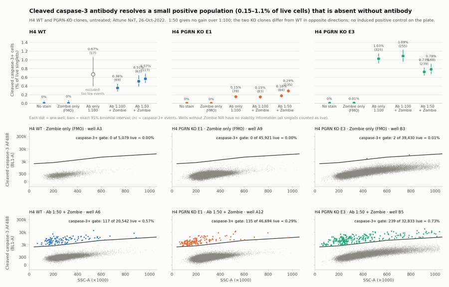
100
agent
Figure is nearly there; fixing overlapping labels on the 1:50 replicate dots, then writing the report and answer file.
101
tool call · Bash
python3 -I - <<'EOF'
s=open('figure.py').read()
s=s.replace("off=[0,0,0,0,-0.14,0.14]","off=[0,0,0,0,-0.2,0.2]")
s=s.replace(""" ax.annotate(f"{lab}%\\n({int(p.casp3_pos)})" if x>=2 else f"{lab}%",(x+o,p.ci_hi),xytext=(0,5),textcoords='offset points',ha='center',va='bottom',fontsize=8,color=SEC)""",
""" ha='center' if o==0 else ('right' if o<0 else 'left'); dx=0 if o==0 else (6 if o<0 else -6)
ax.annotate(f"{lab}%\\n({int(p.casp3_pos)})" if x>=2 else f"{lab}%",(x+o,p.ci_hi),xytext=(dx,5),textcoords='offset points',ha=ha,va='bottom',fontsize=8,color=SEC)""")
s=s.replace("ax.set_xlim(-0.6,4.6)","ax.set_xlim(-0.6,4.85)")
open('figure.py','w').write(s)
EOF
python3 -I figure.py102
tool call · Read
{
"file_path": "/task/outputs/figure.png"
}103
tool output
(Bash completed with no output)
104
tool output
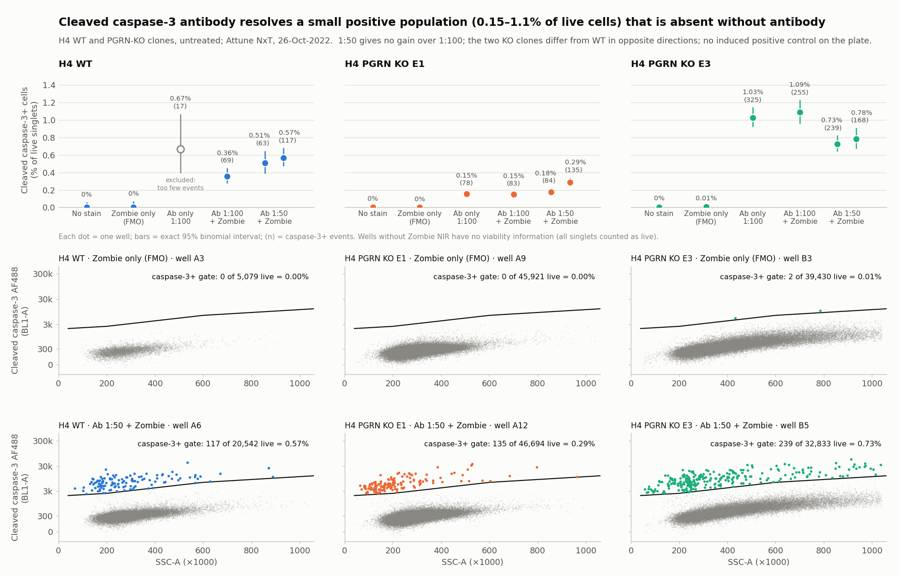
106
tool call · Bash
cat > write_answer.py <<'EOF'
import json, pandas as pd
C=pd.read_csv('/task/outputs/condition_summary.csv').set_index('condition')
F=pd.read_csv('/task/outputs/flags.csv')
m=lambda c: C.loc[c,'mean']
ans={
"question":"Does intracellular flow cytometry with the Cell Signaling cleaved caspase-3 (Asp175) Alexa Fluor 488 antibody (#9669, tested at 1:100 and 1:50, with Zombie NIR viability dye) detect caspase-3-positive cells in H4 WT and PGRN-KO (E1, E3) cells, which dilution should be used, and is the assay ready to move to iPSC-derived neurons?",
"comparisons":[
{"comparison":"WT: antibody + Zombie (1:50) vs Zombie-only FMO (does the antibody give signal above the no-antibody control?)","a":"WT_zombie_only_FMO","b":"WT_full_stain_1to50","direction":"increase","magnitude":f"{m('WT_zombie_only_FMO'):.2f}% -> {m('WT_full_stain_1to50'):.2f}% caspase-3+ of live singlets (0 of 5,079 vs 180 of 32,958 events); positive cells ~20x brighter than negatives","confidence":"high"},
{"comparison":"E1: antibody + Zombie (1:50) vs Zombie-only FMO","a":"E1_zombie_only_FMO","b":"E1_full_stain_1to50","direction":"increase","magnitude":f"{m('E1_zombie_only_FMO'):.2f}% -> {m('E1_full_stain_1to50'):.2f}% (0 of 45,921 vs 219 of 94,266 events)","confidence":"high"},
{"comparison":"E3: antibody + Zombie (1:50) vs Zombie-only FMO","a":"E3_zombie_only_FMO","b":"E3_full_stain_1to50","direction":"increase","magnitude":f"{m('E3_zombie_only_FMO'):.3f}% -> {m('E3_full_stain_1to50'):.2f}% (2 of 39,430 vs 407 of 54,256 events)","confidence":"high"},
{"comparison":"WT: antibody 1:50 vs 1:100","a":"WT_full_stain_1to100","b":"WT_full_stain_1to50","direction":"no_clear_change","magnitude":f"{m('WT_full_stain_1to100'):.2f}% (1 well) vs {m('WT_full_stain_1to50'):.2f}% (2 wells), +0.18 percentage points; positive-population median 5,826 vs ~7,100, stain index 24 vs 28; opposite sign to E3, each well is a separate culture well","confidence":"low"},
{"comparison":"E1: antibody 1:50 vs 1:100","a":"E1_full_stain_1to100","b":"E1_full_stain_1to50","direction":"no_clear_change","magnitude":f"{m('E1_full_stain_1to100'):.2f}% (1 well) vs {m('E1_full_stain_1to50'):.2f}% (2 wells: 0.18% and 0.29%); stain index 28 vs 24-27","confidence":"low"},
{"comparison":"E3: antibody 1:50 vs 1:100","a":"E3_full_stain_1to100","b":"E3_full_stain_1to50","direction":"no_clear_change","magnitude":f"{m('E3_full_stain_1to100'):.2f}% (1 well) vs {m('E3_full_stain_1to50'):.2f}% (2 wells), -0.33 percentage points; stain index 10.5 vs 13.6-13.9; opposite sign to WT and E1","confidence":"low"},
{"comparison":"PGRN KO E1 vs WT, basal (untreated), antibody 1:50","a":"WT_full_stain_1to50","b":"E1_full_stain_1to50","direction":"decrease","magnitude":f"{m('WT_full_stain_1to50'):.2f}% -> {m('E1_full_stain_1to50'):.2f}% (about 2.3-fold lower; same ordering at 1:100, 0.36% vs 0.15%)","confidence":"low"},
{"comparison":"PGRN KO E3 vs WT, basal (untreated), antibody 1:50","a":"WT_full_stain_1to50","b":"E3_full_stain_1to50","direction":"increase","magnitude":f"{m('WT_full_stain_1to50'):.2f}% -> {m('E3_full_stain_1to50'):.2f}% (about 1.4-fold higher; 3.1-fold at 1:100, 0.36% vs 1.09%)","confidence":"low"}
],
"overall_answer":"partial: the antibody works technically - it resolves a discrete cleaved caspase-3+ population (0.15-1.09% of live singlets, ~20x brighter than negatives) that is absent in unstained and Zombie-only controls (<=0.005%), and 1:100 performs as well as 1:50 - but all wells were untreated, so there is no induced positive control, the basal signal is <=1.1%, and the two PGRN-KO clones differ from WT in opposite directions (E1 lower, E3 higher); the assay's dynamic range and any genotype effect are therefore not established.",
"assay_verdict":"needs_optimisation",
"next_action":"change_treatment_or_timing",
"next_change":{"what":"Apoptosis induction before staining (positive control for the cleaved caspase-3 readout)","from":"No treatment: all 18 wells are untreated H4 cells (basal caspase-3+ 0.15-1.09% of live singlets); adherent cells only, medium and PBS wash discarded","to":"Add camptothecin-treated wells next to vehicle (DMSO) wells for each line, e.g. a short dose/time series around 1-10 uM for 4-6 h and 24 h, collecting floating cells together with the trypsinised cells; stain at 1:100 with the same Zombie NIR, unstained, antibody-only and Zombie-only controls, and seed/pool more WT cells for the control wells","why":"The plate shows the antibody separates rare positive cells cleanly, but with no induced positive control it cannot show that the assay responds to caspase-3 activation or over what range; a camptothecin-induced shift is needed before comparing genotypes or moving to iPSC-derived neurons. Camptothecin is already on the entry's materials list."},
"excluded_wells":list(F.well[F.decision=='exclude']),
"caveats":[
"No induced positive control (camptothecin is on the materials list but was not used) and no isotype control: the specificity and dynamic range of the caspase-3+ gate are unverified.",
"Replication is minimal: one well at 1:100 and two wells at 1:50 per line, one plate, one day. Counting error is small (63-255 positive events per well) but well-to-well spread is larger (E1 1:50 wells 0.18% vs 0.29%).",
"Genotype is confounded with clone: E3 cells are larger (median FSC-A ~465,000 vs ~380,000-400,000) and ~1.5x more autofluorescent in BL1, and 4-5% of E3 events sit at the scatter ceiling; E1 and E3 differ from WT in opposite directions.",
"Medium and the PBS wash were discarded before trypsinisation, so detached apoptotic cells were lost; basal caspase-3+ percentages are probably underestimates.",
"Zombie NIR stained every cell ~100x above unstained (live median 11,000-25,000 vs ~120) and dead cells form a tail, not a separate peak, so the live gate is a size-dependent ceiling set by eye; the result is insensitive to it (caspase-3+ of all singlets 0.15-1.11%).",
"WT wells yielded few cells (3,149-21,
… [613 more characters not shown]107
tool output
['A2']
108
tool call · Write
{
"file_path": "/task/outputs/report.md",
"content": "# EXP22004082 \u2014 H4 cleaved caspase-3 intracellular flow, plate of 26-Oct-2022\n\n## Question\n\nDoes intracellular flow cytometry with the Cell Signaling cleaved caspase-3 (Asp175) Alexa Fluor 488 antibody (#9669) detect caspase-3-positive cells in H4 WT and PGRN-KO (E1, E3) cells, which of the two dilutions tried (1:100, 1:50) should be used, and is the assay ready to carry forward to iPSC-derived neurons?\n\n**Answer: partial.** The antibody resolves a small, discrete positive population (0.15\u20131.09% of live singlets) that is absent without antibody (\u22640.005%), and 1:100 performs as well as 1:50. All wells were untreated, so the plate has no induced positive control and cannot show that the assay responds to caspase-3 activation. The two KO clones differ from WT in opposite directions, so no PGRN effect can be claimed.\n\n## Methods\n\n**Data.** 18 FCS files (Attune NxT, about 98 s and 162\u2013164 \u00b5L per well, FSC threshold 25,000). All gating and counting was done in FlowKit 1.2.3 with one gating strategy for all wells (`gates.xml`).\n\n**Channels.** The FCS labels call BL1 \"AAV-GFP\"; that is a stale template label. From the plan's voltage settings, BL1-A is cleaved caspase-3 Alexa Fluor 488 and RL3-A is Zombie NIR. No compensation was applied: the two dyes are on separate lasers and the file's spillover matrix is the identity. Fluorescence gates are drawn on a logicle axis (T = 1,048,576, W = 0.5, M = 4.5, A = 0).\n\n**Gates** (each nested in the one above):\n\n| Population | Role | Axes | What it does |\n|---|---|---|---|\n| `cells` | cells | FSC-A \u00d7 SSC-A | Polygon; drops debris (FSC-A < 200,000, the valley in every well) and events at the scatter ceiling |\n| `singlets` | singlets | FSC-A \u00d7 FSC-W | Polygon; drops the high-width doublet cloud (0.2\u20130.7% of cells) |\n| `live` | live | FSC-A \u00d7 RL3-A | Zombie NIR below a ceiling that rises with cell size (RL3-A about 36,000 at FSC-A 150,000 to about 138,000 at 1,100,000) |\n| `casp3_pos` | marker_positive | SSC-A \u00d7 BL1-A | BL1-A above a ceiling that rises with SSC-A (about 2,000 at SSC-A 40,000 to about 12,300 at 1,060,000) |\n| `casp3_pos_all_singlets` | other | SSC-A \u00d7 BL1-A | Same polygon applied to all singlets, as a check that the result does not depend on the live gate |\n\n- The caspase gate is sloped because autofluorescence rises with SSC, strongly so in E3. A flat BL1 threshold that cleared E3's autofluorescence would cut into the positive cluster in WT and E1.\n- The gate was set on the unstained and Zombie-only (FMO) wells of all three lines: 0, 0, 0, 0, 0 and 2 events fall in it.\n- The live ceiling is sloped because Zombie NIR uptake by intact cells rises with cell size.\n\n**Metric.** `casp3_pos / live`, in percent, per well; no normalisation. Intervals quoted per well are exact 95% binomial intervals. Each flow well is a separate culture well, so the summary has one well at 1:100 and two at 1:50 per line.\n\n## Results\n\n**QC.** Acquisition was steady in every well: no clog or dry-run signature, no fluorescence drift, and carry-over into unstained wells was at most 6 events. Three issues were flagged:\n\n| Wells | Issue | Evidence | Decision |\n|---|---|---|---|\n| A2 (WT antibody only) | too few events | 3,149 events, 2,537 singlets, 17 positive events (0.67%, 95% interval 0.39\u20131.07%) | exclude from summary |\n| A1, A3 (WT unstained, WT Zombie only) | too few events | 6,969 and 5,742 events; 0 positive events each, upper bounds 0.06% and 0.07% | keep with note |\n| B1\u2013B6 (all E3) | saturation | 4.0\u20135.0% of events at the FSC-A/SSC-A ceiling, against \u22640.5% in WT and E1 | keep with note |\n\nWT wells yielded far fewer cells than E1 in the same volume (3,149\u201321,946 events against 33,911\u201358,936). B5 also stuttered for the first 2 s (largest gap 0.81 s) and ran normally afterwards.\n\n**Viability.** Zombie-bright cells were 1.1\u20133.1% of singlets in every Zombie-stained well. Zombie NIR stained all cells about 100-fold above unstained (live median 11,000\u201325,000 against about 120), and dead cells form a tail without a separate peak.\n\n**Caspase-3 signal** (% of live singlets; positive events in brackets):\n\n| Line | Unstained | Zombie only (FMO) | Antibody only 1:100 | 1:100 + Zombie | 1:50 + Zombie (two wells) |\n|---|---|---|---|---|---|\n| WT | 0.00 (0) | 0.00 (0) | excluded | 0.36 (69) | 0.51 (63), 0.57 (117); mean 0.54 |\n| E1 | 0.00 (0) | 0.00 (0) | 0.15 (78) | 0.15 (83) | 0.18 (84), 0.29 (135); mean 0.23 |\n| E3 | 0.00 (0) | 0.005 (2) | 1.03 (325) | 1.09 (255) | 0.73 (239), 0.78 (168); mean 0.76 |\n\n- **The antibody gives a real, resolved signal.** Positive cells form a discrete cluster about 20-fold brighter than the negatives (median BL1-A 5,600\u20139,400 against 280\u2013470), sitting at low SSC. They are almost all Zombie-dim: counting on all singlets gives 0.15\u20131.11%, the same as on live cells.\n- **Background rises only slightly with antibody.** The negative population's median goes from about 250\u2013260 unstained to 280\u2013290 at 1:100 and 295\u2013320 at 1:50 in WT and E1.\n- **1:50 gives no clear gain over 1:100.** The stain index (positive median minus negative median, over twice the negative robust SD) is 24 against 28 in WT, 28 against 24\u201327 in E1 and 10.5 against 13.6\u201313.9 in E3. The percent positive moves up in WT and E1 and down in E3.\n- **Genotype.** Every E1 well is below every WT well (0.15\u20130.29% against 0.36\u20130.57%), and every E3 well is above (0.73\u20131.09%). The differences are under one percentage point and the two KO clones go in opposite directions.\n- **E3 is a different-looking clone.** It is larger (median FSC-A about 465,000 against 380,000\u2013400,000) and about 1.5-fold more autofluorescent in BL1, and its stain index is roughly half that of WT and E1.\n\n## Conclusion\n\nThe staining protocol works: the antibo
… [2,925 more characters not shown]109
tool output
File created successfully at: /task/outputs/report.md (file state is current in your context — no need to Read it back)
110
tool call · Bash
cat > verify.py <<'EOF'
import flowkit as fk, pandas as pd, json, warnings, os
warnings.filterwarnings('ignore')
O='/task/outputs/'
gs=fk.parse_gating_xml(O+'gates.xml')
c=pd.read_csv(O+'counts.csv',keep_default_na=False)
assert list(c.columns)==['file','well','population','role','parent','count','pct_of_parent']
lay=pd.read_csv('/task/inputs/plate_layout.csv')
assert set(c.file)==set(lay.file) and len(c)==18*6
gates={g[0] for g in gs.get_gate_ids()}
assert set(c.population)-{'all_events'}==gates, (set(c.population),gates)
bad=0
for f in lay.file:
s=fk.Sample('/task/inputs/raw/'+f); res=gs.gate_sample(s)
sub=c[c.file==f].set_index('population')
assert int(sub.loc['all_events','count'])==s.event_count and sub.loc['all_events','pct_of_parent']==''
for g in gates:
n=res.get_gate_count(g)
if n!=int(sub.loc[g,'count']): bad+=1; print('MISMATCH',f,g)
pc=int(sub.loc[sub.loc[g,'parent'],'count'])
assert abs(float(sub.loc[g,'pct_of_parent'])-100*n/pc)<1e-3
print('count mismatches:',bad)
print(c.groupby('role').population.unique())
F=pd.read_csv(O+'flags.csv',keep_default_na=False); print(F.shape,list(F.columns)); assert len(F)==18
assert all((F.issue_type!='none')|(F.decision=='keep')) and all((F.issue_type=='none')|(F.evidence.str.contains(r'\d')))
C=pd.read_csv(O+'condition_summary.csv',keep_default_na=False); print(list(C.columns))
P=c.pivot(index='well',columns='population',values='count').astype(int)
for _,r in C.iterrows():
ws=r.wells.split(';'); assert len(ws)==int(r.n_wells_used)
v=(100*P.loc[ws,'casp3_pos']/P.loc[ws,'live'])
assert abs(v.mean()-float(r['mean']))<1e-3, r.condition
assert (r.sd=='')==(len(ws)==1)
if len(ws)>1: assert abs(v.std(ddof=1)-float(r.sd))<1e-3
assert not set(ws)&set(F.well[F.decision=='exclude'])
A=json.load(open(O+'answer.json'))
assert set(A['excluded_wells'])==set(F.well[F.decision=='exclude'])
for k in A['comparisons']: assert k['a'] in set(C.condition) and k['b'] in set(C.condition)
print(A['overall_answer'][:8],A['assay_verdict'],A['next_action'])
import re
print(re.findall(r'^## .*$',open(O+'report.md').read(),re.M))
print(os.listdir(O))
EOF
python3 -I verify.py && head -8 /task/outputs/counts.csv && grep -c "Gate " /task/outputs/gates.xml; head -c 1500 /task/outputs/gates.xml111
tool output
count mismatches: 0
role
cells [cells]
live [live]
marker_positive [casp3_pos]
other [all_events, casp3_pos_all_singlets]
singlets [singlets]
Name: population, dtype: object
(18, 5) ['file', 'well', 'issue_type', 'evidence', 'decision']
['condition', 'wells', 'n_wells_used', 'mean', 'sd', 'metric_definition', 'normalisation_applied']
partial: needs_optimisation change_treatment_or_timing
['## Question', '## Methods', '## Results', '## Conclusion', '## Caveats', '## Recommendation']
['report.md', 'flags.csv', 'answer.json', 'condition_summary.csv', 'counts.csv', 'figure.png', 'gates.xml']
file,well,population,role,parent,count,pct_of_parent
Caspase_h4_mlk(4)_caspase_Group_A1_WT_no stain.fcs,A1,all_events,other,none,6969,
Caspase_h4_mlk(4)_caspase_Group_A1_WT_no stain.fcs,A1,cells,cells,all_events,6373,91.4478
Caspase_h4_mlk(4)_caspase_Group_A1_WT_no stain.fcs,A1,singlets,singlets,cells,6361,99.8117
Caspase_h4_mlk(4)_caspase_Group_A1_WT_no stain.fcs,A1,live,live,singlets,6361,100.0
Caspase_h4_mlk(4)_caspase_Group_A1_WT_no stain.fcs,A1,casp3_pos,marker_positive,live,0,0.0
Caspase_h4_mlk(4)_caspase_Group_A1_WT_no stain.fcs,A1,casp3_pos_all_singlets,other,singlets,0,0.0
Caspase_h4_mlk(4)_caspase_Group_A2_Wt_caspase_1-100.fcs,A2,all_events,other,none,3149,
5
<?xml version='1.0' encoding='UTF-8'?>
<gating:Gating-ML xmlns:gating="http://www.isac-net.org/std/Gating-ML/v2.0/gating" xmlns:data-type="http://www.isac-net.org/std/Gating-ML/v2.0/datatypes" xmlns:transforms="http://www.isac-net.org/std/Gating-ML/v2.0/transformations">
<transforms:transformation transforms:id="logicle">
<transforms:logicle transforms:T="1048576" transforms:W="0.5" transforms:M="4.5" transforms:A="0"/>
</transforms:transformation>
<gating:PolygonGate gating:id="cells">
<gating:dimension gating:compensation-ref="uncompensated">
<data-type:fcs-dimension data-type:name="FSC-A"/>
</gating:dimension>
<gating:dimension gating:compensation-ref="uncompensated">
<data-type:fcs-dimension data-type:name="SSC-A"/>
</gating:dimension>
<gating:vertex>
<gating:coordinate data-type:value="200000"/>
<gating:coordinate data-type:value="50000"/>
</gating:vertex>
<gating:vertex>
<gating:coordinate data-type:value="200000"/>
<gating:coordinate data-type:value="450000"/>
</gating:vertex>
<gating:vertex>
<gating:coordinate data-type:value="500000"/>
<gating:coordinate data-type:value="1040000"/>
</gating:vertex>
<gating:vertex>
<gating:coordinate data-type:value="1040000"/>
<gating:coordinate data-type:value="1040000"/>
</gating:vertex>
<gating:vertex>
<gating:coordinate data-type:value="1040000"/>
<gating:coordinate data-type:value="180000"/>
<113
agent
The plate is analysed and all seven deliverables are in `/task/outputs/`. The saved gates reload with `flowkit.parse_gating_xml` and reproduce every count in `counts.csv` on all 18 files.
**Answer: partial.** The cleaved caspase-3 antibody works technically, but the plate cannot show the assay responds to caspase-3 activation, because every well was untreated.
- **Signal above control:** stained wells show a discrete positive population, 0.15–1.09% of live singlets and about 20× brighter than the negatives. The unstained and Zombie-only wells have 0–2 events in the gate (≤0.005%).
- **Dilution:** 1:50 gives no clear gain over 1:100. Percent positive goes up in WT and E1 and down in E3, and stain index is similar.
- **Genotype:** the two knockout clones differ from WT in opposite directions, so there is no PGRN effect to claim. All differences are under one percentage point on a single plate.
| Line | 1:100 + Zombie (1 well) | 1:50 + Zombie (mean of 2 wells) |
|---|---|---|
| WT | 0.36% | 0.54% |
| E1 | 0.15% | 0.23% |
| E3 | 1.09% | 0.76% |
**Channels:** the FCS files label BL1 as "AAV-GFP", which is a stale template label. I read BL1-A as cleaved caspase-3 Alexa Fluor 488 and RL3-A as Zombie NIR, from the plan's voltage settings.
**Gating:** the caspase gate is a sloped boundary on BL1 versus SSC, not a flat threshold, because E3 autofluorescence rises steeply with SSC. The live gate is likewise sloped with cell size and set by eye; the result does not depend on it (0.15–1.11% on all singlets).
**QC flags:**
- **A2 (WT antibody-only) is excluded.** It has 3,149 events and only 17 positive events, too few to quantify. This is a judgement call; the well is a control and does not affect the main comparisons.
- **A1 and A3 are kept with a note.** They are low-yield WT controls, but adequate as negative controls.
- **All six E3 wells are kept with a note.** 4–5% of their events sit at the scatter ceiling because E3 cells are larger.
**Recommendation:** verdict `needs_optimisation`, next action `change_treatment_or_timing`. Repeat with camptothecin-treated wells beside vehicle wells for each line, stain at 1:100, and collect floating cells with the trypsinised ones. The protocol as run discards the medium and wash, which probably loses apoptotic cells. I chose `change_treatment_or_timing` over `repeat_with_change` because the change is adding a treatment; say if you would rather it be filed the other way.
Files are in `/task/outputs/`:
- `report.md`
- `answer.json`
- `figure.png`
- `gates.xml`
- `counts.csv`
- `flags.csv`
- `condition_summary.csv`
final result
The plate is analysed and all seven deliverables are in `/task/outputs/`. The saved gates reload with `flowkit.parse_gating_xml` and reproduce every count in `counts.csv` on all 18 files. **Answer: partial.** The cleaved caspase-3 antibody works technically, but the plate cannot show the assay responds to caspase-3 activation, because every well was untreated. - **Signal above control:** stained wells show a discrete positive population, 0.15–1.09% of live singlets and about 20× brighter than the negatives. The unstained and Zombie-only wells have 0–2 events in the gate (≤0.005%). - **Dilution:** 1:50 gives no clear gain over 1:100. Percent positive goes up in WT and E1 and down in E3, and stain index is similar. - **Genotype:** the two knockout clones differ from WT in opposite directions, so there is no PGRN effect to claim. All differences are under one percentage point on a single plate. | Line | 1:100 + Zombie (1 well) | 1:50 + Zombie (mean of 2 wells) | |---|---|---| | WT | 0.36% | 0.54% | | E1 | 0.15% | 0.23% | | E3 | 1.09% | 0.76% | **Channels:** the FCS files label BL1 as "AAV-GFP", which is a stale template label. I read BL1-A as cleaved caspase-3 Alexa Fluor 488 and RL3-A as Zombie NIR, from the plan's voltage settings. **Gating:** the caspase gate is a sloped boundary on BL1 versus SSC, not a flat threshold, because E3 autofluorescence rises steeply with SSC. The live gate is likewise sloped with cell size and set by eye; the result does not depend on it (0.15–1.11% on all singlets). **QC flags:** - **A2 (WT antibody-only) is excluded.** It has 3,149 events and only 17 positive events, too few to quantify. This is a judgement call; the well is a control and does not affect the main comparisons. - **A1 and A3 are kept with a note.** They are low-yield WT controls, but adequate as negative controls. - **All six E3 wells are kept with a note.** 4–5% of their events sit at the scatter ceiling because E3 cells are larger. **Recommendation:** verdict `needs_optimisation`, next action `change_treatment_or_timing`. Repeat with camptothecin-treated wells beside vehicle wells for each line, stain at 1:100, and collect floating cells with the trypsinised ones. The protocol as run discards the medium and wash, which probably loses apoptotic cells. I chose `change_treatment_or_timing` over `repeat_with_change` because the change is adding a treatment; say if you would rather it be filed the other way. Files are in `/task/outputs/`: - `report.md` - `answer.json` - `figure.png` - `gates.xml` - `counts.csv` - `flags.csv` - `condition_summary.csv`